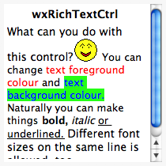

| Version: 2.9.4 |
#include </home/zeitlin/src/wx/github/interface/wx/richtext/richtextctrl.h>
 Inheritance diagram for wxRichTextCtrl:
Inheritance diagram for wxRichTextCtrl:wxRichTextCtrl provides a generic, ground-up implementation of a text control capable of showing multiple styles and images.
wxRichTextCtrl sends notification events: see wxRichTextEvent.
It also sends the standard wxTextCtrl events wxEVT_COMMAND_TEXT_ENTER and wxEVT_COMMAND_TEXT_UPDATED, and wxTextUrlEvent when URL content is clicked.
For more information, see the wxRichTextCtrl Overview.
This class supports the following styles:
 |  |  |
| wxMSW appearance | wxGTK appearance | wxMac appearance |
Public Member Functions | |
| wxRichTextCtrl () | |
| Default constructor. | |
| wxRichTextCtrl (wxWindow *parent, wxWindowID id=-1, const wxString &value=wxEmptyString, const wxPoint &pos=wxDefaultPosition, const wxSize &size=wxDefaultSize, long style=wxRE_MULTILINE, const wxValidator &validator=wxDefaultValidator, const wxString &name=wxTextCtrlNameStr) | |
| Constructor, creating and showing a rich text control. | |
| virtual | ~wxRichTextCtrl () |
| Destructor. | |
| bool | Create (wxWindow *parent, wxWindowID id=-1, const wxString &value=wxEmptyString, const wxPoint &pos=wxDefaultPosition, const wxSize &size=wxDefaultSize, long style=wxRE_MULTILINE, const wxValidator &validator=wxDefaultValidator, const wxString &name=wxTextCtrlNameStr) |
| Creates the underlying window. | |
| void | Init () |
| Initialises the members of the control. | |
| virtual wxString | GetRange (long from, long to) const |
| Gets the text for the given range. | |
| virtual int | GetLineLength (long lineNo) const |
| Returns the length of the specified line in characters. | |
| virtual wxString | GetLineText (long lineNo) const |
| Returns the text for the given line. | |
| virtual int | GetNumberOfLines () const |
| Returns the number of lines in the buffer. | |
| virtual bool | IsModified () const |
| Returns true if the buffer has been modified. | |
| virtual bool | IsEditable () const |
| Returns true if the control is editable. | |
| bool | IsSingleLine () const |
| Returns true if the control is single-line. | |
| bool | IsMultiLine () const |
| Returns true if the control is multiline. | |
| virtual wxString | GetStringSelection () const |
| Returns the text within the current selection range, if any. | |
| wxString | GetFilename () const |
| Gets the current filename associated with the control. | |
| void | SetFilename (const wxString &filename) |
| Sets the current filename. | |
| void | SetDelayedLayoutThreshold (long threshold) |
| Sets the size of the buffer beyond which layout is delayed during resizing. | |
| long | GetDelayedLayoutThreshold () const |
| Gets the size of the buffer beyond which layout is delayed during resizing. | |
| bool | GetFullLayoutRequired () const |
| void | SetFullLayoutRequired (bool b) |
| wxLongLong | GetFullLayoutTime () const |
| void | SetFullLayoutTime (wxLongLong t) |
| long | GetFullLayoutSavedPosition () const |
| void | SetFullLayoutSavedPosition (long p) |
| void | ForceDelayedLayout () |
| void | SetTextCursor (const wxCursor &cursor) |
| Sets the text (normal) cursor. | |
| wxCursor | GetTextCursor () const |
| Returns the text (normal) cursor. | |
| void | SetURLCursor (const wxCursor &cursor) |
| Sets the cursor to be used over URLs. | |
| wxCursor | GetURLCursor () const |
| Returns the cursor to be used over URLs. | |
| bool | GetCaretAtLineStart () const |
| Returns true if we are showing the caret position at the start of a line instead of at the end of the previous one. | |
| void | SetCaretAtLineStart (bool atStart) |
| Sets a flag to remember that we are showing the caret position at the start of a line instead of at the end of the previous one. | |
| bool | GetDragging () const |
| Returns true if we are extending a selection. | |
| void | SetDragging (bool dragging) |
| Sets a flag to remember if we are extending a selection. | |
| bool | GetPreDrag () const |
| Are we trying to start Drag'n'Drop? | |
| void | SetPreDrag (bool pd) |
| Set if we're trying to start Drag'n'Drop. | |
| const wxPoint | GetDragStartPoint () const |
| Get the possible Drag'n'Drop start point. | |
| void | SetDragStartPoint (wxPoint sp) |
| Set the possible Drag'n'Drop start point. | |
| const wxDateTime | GetDragStartTime () const |
| Get the possible Drag'n'Drop start time. | |
| void | SetDragStartTime (wxDateTime st) |
| Set the possible Drag'n'Drop start time. | |
| wxMenu * | GetContextMenu () const |
| Returns the current context menu. | |
| void | SetContextMenu (wxMenu *menu) |
| Sets the current context menu. | |
| long | GetSelectionAnchor () const |
| Returns an anchor so we know how to extend the selection. | |
| void | SetSelectionAnchor (long anchor) |
| Sets an anchor so we know how to extend the selection. | |
| wxRichTextObject * | GetSelectionAnchorObject () const |
| Returns the anchor object if selecting multiple containers. | |
| void | SetSelectionAnchorObject (wxRichTextObject *anchor) |
| Sets the anchor object if selecting multiple containers. | |
| wxRichTextParagraphLayoutBox * | GetFocusObject () const |
| Returns the wxRichTextObject object that currently has the editing focus. | |
| void | StoreFocusObject (wxRichTextParagraphLayoutBox *obj) |
| Setter for m_focusObject. | |
| bool | SetFocusObject (wxRichTextParagraphLayoutBox *obj, bool setCaretPosition=true) |
| Sets the wxRichTextObject object that currently has the editing focus. | |
| void | Invalidate () |
| Invalidates the whole buffer to trigger painting later. | |
| virtual void | Clear () |
| Clears the buffer content, leaving a single empty paragraph. | |
| virtual void | Replace (long from, long to, const wxString &value) |
| Replaces the content in the specified range with the string specified by value. | |
| virtual void | Remove (long from, long to) |
| Removes the content in the specified range. | |
| virtual bool | DoLoadFile (const wxString &file, int fileType) |
| Helper function for LoadFile(). | |
| virtual bool | DoSaveFile (const wxString &file=wxEmptyString, int fileType=wxRICHTEXT_TYPE_ANY) |
| Helper function for SaveFile(). | |
| void | SetHandlerFlags (int flags) |
| Sets flags that change the behaviour of loading or saving. | |
| int | GetHandlerFlags () const |
| Returns flags that change the behaviour of loading or saving. | |
| virtual void | MarkDirty () |
| Marks the buffer as modified. | |
| virtual void | DiscardEdits () |
| Sets the buffer's modified status to false, and clears the buffer's command history. | |
| virtual void | SetMaxLength (unsigned long WXUNUSED(len)) |
| Sets the maximum number of characters that may be entered in a single line text control. | |
| virtual void | WriteText (const wxString &text) |
| Writes text at the current position. | |
| virtual void | AppendText (const wxString &text) |
| Sets the insertion point to the end of the buffer and writes the text. | |
| virtual void | SetStyle (wxRichTextObject *obj, const wxRichTextAttr &textAttr, int flags=wxRICHTEXT_SETSTYLE_WITH_UNDO) |
| Sets the attributes for a single object. | |
| virtual bool | SetStyleEx (const wxRichTextRange &range, const wxRichTextAttr &style, int flags=wxRICHTEXT_SETSTYLE_WITH_UNDO) |
| Sets the attributes for the given range, passing flags to determine how the attributes are set. | |
| virtual const wxRichTextAttr & | GetDefaultStyleEx () const |
| Returns the current default style, which can be used to change how subsequently inserted text is displayed. | |
| virtual bool | ClearListStyle (const wxRichTextRange &range, int flags=wxRICHTEXT_SETSTYLE_WITH_UNDO) |
| Clears the list style from the given range, clearing list-related attributes and applying any named paragraph style associated with each paragraph. | |
| virtual bool | SetProperties (const wxRichTextRange &range, const wxRichTextProperties &properties, int flags=wxRICHTEXT_SETPROPERTIES_WITH_UNDO) |
| Sets the properties for the given range, passing flags to determine how the attributes are set. | |
| virtual bool | Delete (const wxRichTextRange &range) |
| Deletes the content within the given range. | |
| virtual long | XYToPosition (long x, long y) const |
| Translates from column and line number to position. | |
| virtual bool | PositionToXY (long pos, long *x, long *y) const |
| Converts a text position to zero-based column and line numbers. | |
| virtual void | ShowPosition (long pos) |
| Scrolls the buffer so that the given position is in view. | |
| virtual void | Copy () |
| Copies the selected content (if any) to the clipboard. | |
| virtual void | Cut () |
| Copies the selected content (if any) to the clipboard and deletes the selection. | |
| virtual void | Paste () |
| Pastes content from the clipboard to the buffer. | |
| virtual void | DeleteSelection () |
| Deletes the content in the selection, if any. | |
| virtual bool | CanCopy () const |
| Returns true if selected content can be copied to the clipboard. | |
| virtual bool | CanCut () const |
| Returns true if selected content can be copied to the clipboard and deleted. | |
| virtual bool | CanPaste () const |
| Returns true if the clipboard content can be pasted to the buffer. | |
| virtual bool | CanDeleteSelection () const |
| Returns true if selected content can be deleted. | |
| virtual void | Undo () |
| Undoes the command at the top of the command history, if there is one. | |
| virtual void | Redo () |
| Redoes the current command. | |
| virtual bool | CanUndo () const |
| Returns true if there is a command in the command history that can be undone. | |
| virtual bool | CanRedo () const |
| Returns true if there is a command in the command history that can be redone. | |
| virtual void | SetInsertionPoint (long pos) |
| Sets the insertion point and causes the current editing style to be taken from the new position (unlike wxRichTextCtrl::SetCaretPosition). | |
| virtual void | SetInsertionPointEnd () |
| Sets the insertion point to the end of the text control. | |
| virtual long | GetInsertionPoint () const |
| Returns the current insertion point. | |
| virtual wxTextPos | GetLastPosition () const |
| Returns the last position in the buffer. | |
| virtual void | SelectAll () |
| Selects all the text in the buffer. | |
| virtual void | SetEditable (bool editable) |
| Makes the control editable, or not. | |
| virtual bool | HasSelection () const |
| Returns true if there is a selection and the object containing the selection was the same as the current focus object. | |
| virtual bool | HasUnfocusedSelection () const |
| Returns true if there was a selection, whether or not the current focus object is the same as the selection's container object. | |
| virtual bool | WriteImage (const wxString &filename, wxBitmapType bitmapType, const wxRichTextAttr &textAttr=wxRichTextAttr()) |
| Loads an image from a file and writes it at the current insertion point. | |
| virtual bool | WriteImage (const wxRichTextImageBlock &imageBlock, const wxRichTextAttr &textAttr=wxRichTextAttr()) |
| Writes an image block at the current insertion point. | |
| virtual wxRichTextBox * | WriteTextBox (const wxRichTextAttr &textAttr=wxRichTextAttr()) |
| Write a text box at the current insertion point, returning the text box. | |
| virtual wxRichTextField * | WriteField (const wxString &fieldType, const wxRichTextProperties &properties, const wxRichTextAttr &textAttr=wxRichTextAttr()) |
| Writes a field at the current insertion point. | |
| virtual wxRichTextTable * | WriteTable (int rows, int cols, const wxRichTextAttr &tableAttr=wxRichTextAttr(), const wxRichTextAttr &cellAttr=wxRichTextAttr()) |
| Write a table at the current insertion point, returning the table. | |
| virtual bool | Newline () |
| Inserts a new paragraph at the current insertion point. | |
| virtual bool | LineBreak () |
| Inserts a line break at the current insertion point. | |
| virtual void | SetBasicStyle (const wxRichTextAttr &style) |
| Sets the basic (overall) style. | |
| virtual const wxRichTextAttr & | GetBasicStyle () const |
| Gets the basic (overall) style. | |
| virtual bool | BeginStyle (const wxRichTextAttr &style) |
| Begins applying a style. | |
| virtual bool | EndStyle () |
| Ends the current style. | |
| virtual bool | EndAllStyles () |
| Ends application of all styles in the current style stack. | |
| bool | BeginBold () |
| Begins using bold. | |
| bool | EndBold () |
| Ends using bold. | |
| bool | BeginItalic () |
| Begins using italic. | |
| bool | EndItalic () |
| Ends using italic. | |
| bool | BeginUnderline () |
| Begins using underlining. | |
| bool | EndUnderline () |
| End applying underlining. | |
| bool | BeginFontSize (int pointSize) |
| Begins using the given point size. | |
| bool | EndFontSize () |
| Ends using a point size. | |
| bool | BeginFont (const wxFont &font) |
| Begins using this font. | |
| bool | EndFont () |
| Ends using a font. | |
| bool | BeginTextColour (const wxColour &colour) |
| Begins using this colour. | |
| bool | EndTextColour () |
| Ends applying a text colour. | |
| bool | BeginAlignment (wxTextAttrAlignment alignment) |
| Begins using alignment. | |
| bool | EndAlignment () |
| Ends alignment. | |
| bool | BeginLeftIndent (int leftIndent, int leftSubIndent=0) |
| Begins applying a left indent and subindent in tenths of a millimetre. | |
| bool | EndLeftIndent () |
| Ends left indent. | |
| bool | BeginRightIndent (int rightIndent) |
| Begins a right indent, specified in tenths of a millimetre. | |
| bool | EndRightIndent () |
| Ends right indent. | |
| bool | BeginParagraphSpacing (int before, int after) |
| Begins paragraph spacing; pass the before-paragraph and after-paragraph spacing in tenths of a millimetre. | |
| bool | EndParagraphSpacing () |
| Ends paragraph spacing. | |
| bool | BeginLineSpacing (int lineSpacing) |
| Begins appling line spacing. | |
| bool | EndLineSpacing () |
| Ends line spacing. | |
| bool | BeginNumberedBullet (int bulletNumber, int leftIndent, int leftSubIndent, int bulletStyle=wxTEXT_ATTR_BULLET_STYLE_ARABIC|wxTEXT_ATTR_BULLET_STYLE_PERIOD) |
| Begins a numbered bullet. | |
| bool | EndNumberedBullet () |
| Ends application of a numbered bullet. | |
| bool | BeginSymbolBullet (const wxString &symbol, int leftIndent, int leftSubIndent, int bulletStyle=wxTEXT_ATTR_BULLET_STYLE_SYMBOL) |
| Begins applying a symbol bullet, using a character from the current font. | |
| bool | EndSymbolBullet () |
| Ends applying a symbol bullet. | |
| bool | BeginStandardBullet (const wxString &bulletName, int leftIndent, int leftSubIndent, int bulletStyle=wxTEXT_ATTR_BULLET_STYLE_STANDARD) |
| Begins applying a symbol bullet. | |
| bool | EndStandardBullet () |
| Begins applying a standard bullet. | |
| bool | BeginCharacterStyle (const wxString &characterStyle) |
| Begins using the named character style. | |
| bool | EndCharacterStyle () |
| Ends application of a named character style. | |
| bool | BeginParagraphStyle (const wxString ¶graphStyle) |
| Begins applying the named paragraph style. | |
| bool | EndParagraphStyle () |
| Ends application of a named paragraph style. | |
| bool | BeginListStyle (const wxString &listStyle, int level=1, int number=1) |
| Begins using a specified list style. | |
| bool | EndListStyle () |
| Ends using a specified list style. | |
| bool | BeginURL (const wxString &url, const wxString &characterStyle=wxEmptyString) |
| Begins applying wxTEXT_ATTR_URL to the content. | |
| bool | EndURL () |
| Ends applying a URL. | |
| bool | SetDefaultStyleToCursorStyle () |
| Sets the default style to the style under the cursor. | |
| virtual void | SelectNone () |
| Cancels any selection. | |
| virtual bool | SelectWord (long position) |
| Selects the word at the given character position. | |
| wxRichTextRange | GetSelectionRange () const |
| Returns the selection range in character positions. | |
| void | SetSelectionRange (const wxRichTextRange &range) |
| Sets the selection to the given range. | |
| wxRichTextRange | GetInternalSelectionRange () const |
| Returns the selection range in character positions. | |
| void | SetInternalSelectionRange (const wxRichTextRange &range) |
| Sets the selection range in character positions. | |
| virtual wxRichTextRange | AddParagraph (const wxString &text) |
| Adds a new paragraph of text to the end of the buffer. | |
| virtual wxRichTextRange | AddImage (const wxImage &image) |
| Adds an image to the control's buffer. | |
| virtual bool | LayoutContent (bool onlyVisibleRect=false) |
| Lays out the buffer, which must be done before certain operations, such as setting the caret position. | |
| virtual bool | MoveCaret (long pos, bool showAtLineStart=false, wxRichTextParagraphLayoutBox *container=NULL) |
| Move the caret to the given character position. | |
| virtual bool | MoveRight (int noPositions=1, int flags=0) |
| Moves right. | |
| virtual bool | MoveLeft (int noPositions=1, int flags=0) |
| Moves left. | |
| virtual bool | MoveUp (int noLines=1, int flags=0) |
| Moves to the start of the paragraph. | |
| virtual bool | MoveDown (int noLines=1, int flags=0) |
| Moves the caret down. | |
| virtual bool | MoveToLineEnd (int flags=0) |
| Moves to the end of the line. | |
| virtual bool | MoveToLineStart (int flags=0) |
| Moves to the start of the line. | |
| virtual bool | MoveToParagraphEnd (int flags=0) |
| Moves to the end of the paragraph. | |
| virtual bool | MoveToParagraphStart (int flags=0) |
| Moves to the start of the paragraph. | |
| virtual bool | MoveHome (int flags=0) |
| Moves to the start of the buffer. | |
| virtual bool | MoveEnd (int flags=0) |
| Moves to the end of the buffer. | |
| virtual bool | PageUp (int noPages=1, int flags=0) |
| Moves one or more pages up. | |
| virtual bool | PageDown (int noPages=1, int flags=0) |
| Moves one or more pages down. | |
| virtual bool | WordLeft (int noPages=1, int flags=0) |
| Moves a number of words to the left. | |
| virtual bool | WordRight (int noPages=1, int flags=0) |
| Move a nuber of words to the right. | |
| virtual bool | BeginBatchUndo (const wxString &cmdName) |
| Starts batching undo history for commands. | |
| virtual bool | EndBatchUndo () |
| Ends batching undo command history. | |
| virtual bool | BatchingUndo () const |
| Returns true if undo commands are being batched. | |
| virtual bool | BeginSuppressUndo () |
| Starts suppressing undo history for commands. | |
| virtual bool | EndSuppressUndo () |
| Ends suppressing undo command history. | |
| virtual bool | SuppressingUndo () const |
| Returns true if undo history suppression is on. | |
| virtual bool | HasCharacterAttributes (const wxRichTextRange &range, const wxRichTextAttr &style) const |
| Test if this whole range has character attributes of the specified kind. | |
| virtual bool | HasParagraphAttributes (const wxRichTextRange &range, const wxRichTextAttr &style) const |
| Test if this whole range has paragraph attributes of the specified kind. | |
| virtual bool | IsSelectionBold () |
| Returns true if all of the selection, or the content at the caret position, is bold. | |
| virtual bool | IsSelectionItalics () |
| Returns true if all of the selection, or the content at the caret position, is italic. | |
| virtual bool | IsSelectionUnderlined () |
| Returns true if all of the selection, or the content at the caret position, is underlined. | |
| virtual bool | DoesSelectionHaveTextEffectFlag (int flag) |
| Returns true if all of the selection, or the content at the current caret position, has the supplied wxTextAttrEffects flag(s). | |
| virtual bool | IsSelectionAligned (wxTextAttrAlignment alignment) |
| Returns true if all of the selection is aligned according to the specified flag. | |
| virtual bool | ApplyBoldToSelection () |
| Apples bold to the selection or the default style (undoable). | |
| virtual bool | ApplyItalicToSelection () |
| Applies italic to the selection or the default style (undoable). | |
| virtual bool | ApplyUnderlineToSelection () |
| Applies underline to the selection or the default style (undoable). | |
| virtual bool | ApplyTextEffectToSelection (int flags) |
| Applies one or more wxTextAttrEffects flags to the selection (undoable). | |
| virtual bool | ApplyAlignmentToSelection (wxTextAttrAlignment alignment) |
| Applies the given alignment to the selection or the default style (undoable). | |
| virtual bool | ApplyStyle (wxRichTextStyleDefinition *def) |
| Applies the style sheet to the buffer, matching paragraph styles in the sheet against named styles in the buffer. | |
| void | SetStyleSheet (wxRichTextStyleSheet *styleSheet) |
| Sets the style sheet associated with the control. | |
| wxRichTextStyleSheet * | GetStyleSheet () const |
| Returns the style sheet associated with the control, if any. | |
| bool | PushStyleSheet (wxRichTextStyleSheet *styleSheet) |
| Push the style sheet to top of stack. | |
| wxRichTextStyleSheet * | PopStyleSheet () |
| Pops the style sheet from top of stack. | |
| bool | ApplyStyleSheet (wxRichTextStyleSheet *styleSheet=NULL) |
| Applies the style sheet to the buffer, for example if the styles have changed. | |
| virtual bool | ShowContextMenu (wxMenu *menu, const wxPoint &pt, bool addPropertyCommands) |
| Shows the given context menu, optionally adding appropriate property-editing commands for the current position in the object hierarchy. | |
| virtual int | PrepareContextMenu (wxMenu *menu, const wxPoint &pt, bool addPropertyCommands) |
| Prepares the context menu, optionally adding appropriate property-editing commands. | |
| virtual bool | CanEditProperties (wxRichTextObject *obj) const |
| Returns true if we can edit the object's properties via a GUI. | |
| virtual bool | EditProperties (wxRichTextObject *obj, wxWindow *parent) |
| Edits the object's properties via a GUI. | |
| virtual wxString | GetPropertiesMenuLabel (wxRichTextObject *obj) |
| Gets the object's properties menu label. | |
| virtual void | PrepareContent (wxRichTextParagraphLayoutBox &WXUNUSED(container)) |
| Prepares the content just before insertion (or after buffer reset). | |
| virtual bool | CanDeleteRange (wxRichTextParagraphLayoutBox &container, const wxRichTextRange &range) const |
| Can we delete this range? Sends an event to the control. | |
| virtual bool | CanInsertContent (wxRichTextParagraphLayoutBox &container, long pos) const |
| Can we insert content at this position? Sends an event to the control. | |
| virtual void | EnableVerticalScrollbar (bool enable) |
| Enable or disable the vertical scrollbar. | |
| virtual bool | GetVerticalScrollbarEnabled () const |
| Returns true if the vertical scrollbar is enabled. | |
| void | SetFontScale (double fontScale, bool refresh=false) |
| Sets the scale factor for displaying fonts, for example for more comfortable editing. | |
| double | GetFontScale () const |
| Returns the scale factor for displaying fonts, for example for more comfortable editing. | |
| void | SetDimensionScale (double dimScale, bool refresh=false) |
| Sets the scale factor for displaying certain dimensions such as indentation and inter-paragraph spacing. | |
| double | GetDimensionScale () const |
| Returns the scale factor for displaying certain dimensions such as indentation and inter-paragraph spacing. | |
| void | SetScale (double scale, bool refresh=false) |
| Sets an overall scale factor for displaying and editing the content. | |
| double | GetScale () const |
| Returns an overall scale factor for displaying and editing the content. | |
| wxPoint | GetUnscaledPoint (const wxPoint &pt) const |
| Returns an unscaled point. | |
| wxPoint | GetScaledPoint (const wxPoint &pt) const |
| Returns a scaled point. | |
| wxSize | GetUnscaledSize (const wxSize &sz) const |
| Returns an unscaled size. | |
| wxSize | GetScaledSize (const wxSize &sz) const |
| Returns a scaled size. | |
| wxRect | GetUnscaledRect (const wxRect &rect) const |
| Returns an unscaled rectangle. | |
| wxRect | GetScaledRect (const wxRect &rect) const |
| Returns a scaled rectangle. | |
| void | Command (wxCommandEvent &event) |
| Sends the event to the control. | |
| void | OnDropFiles (wxDropFilesEvent &event) |
| Loads the first dropped file. | |
| void | OnCaptureLost (wxMouseCaptureLostEvent &event) |
| void | OnSysColourChanged (wxSysColourChangedEvent &event) |
| void | OnCut (wxCommandEvent &event) |
| Standard handler for the wxID_CUT command. | |
| void | OnCopy (wxCommandEvent &event) |
| Standard handler for the wxID_COPY command. | |
| void | OnPaste (wxCommandEvent &event) |
| Standard handler for the wxID_PASTE command. | |
| void | OnUndo (wxCommandEvent &event) |
| Standard handler for the wxID_UNDO command. | |
| void | OnRedo (wxCommandEvent &event) |
| Standard handler for the wxID_REDO command. | |
| void | OnSelectAll (wxCommandEvent &event) |
| Standard handler for the wxID_SELECTALL command. | |
| void | OnProperties (wxCommandEvent &event) |
| Standard handler for property commands. | |
| void | OnClear (wxCommandEvent &event) |
| Standard handler for the wxID_CLEAR command. | |
| void | OnUpdateCut (wxUpdateUIEvent &event) |
| Standard update handler for the wxID_CUT command. | |
| void | OnUpdateCopy (wxUpdateUIEvent &event) |
| Standard update handler for the wxID_COPY command. | |
| void | OnUpdatePaste (wxUpdateUIEvent &event) |
| Standard update handler for the wxID_PASTE command. | |
| void | OnUpdateUndo (wxUpdateUIEvent &event) |
| Standard update handler for the wxID_UNDO command. | |
| void | OnUpdateRedo (wxUpdateUIEvent &event) |
| Standard update handler for the wxID_REDO command. | |
| void | OnUpdateSelectAll (wxUpdateUIEvent &event) |
| Standard update handler for the wxID_SELECTALL command. | |
| void | OnUpdateProperties (wxUpdateUIEvent &event) |
| Standard update handler for property commands. | |
| void | OnUpdateClear (wxUpdateUIEvent &event) |
| Standard update handler for the wxID_CLEAR command. | |
| void | OnContextMenu (wxContextMenuEvent &event) |
| Shows a standard context menu with undo, redo, cut, copy, paste, clear, and select all commands. | |
| void | OnPaint (wxPaintEvent &event) |
| void | OnEraseBackground (wxEraseEvent &event) |
| void | OnLeftClick (wxMouseEvent &event) |
| void | OnLeftUp (wxMouseEvent &event) |
| void | OnMoveMouse (wxMouseEvent &event) |
| void | OnLeftDClick (wxMouseEvent &event) |
| void | OnMiddleClick (wxMouseEvent &event) |
| void | OnRightClick (wxMouseEvent &event) |
| void | OnChar (wxKeyEvent &event) |
| void | OnSize (wxSizeEvent &event) |
| void | OnSetFocus (wxFocusEvent &event) |
| void | OnKillFocus (wxFocusEvent &event) |
| void | OnIdle (wxIdleEvent &event) |
| void | OnScroll (wxScrollWinEvent &event) |
| virtual bool | SetFont (const wxFont &font) |
| Sets the font, and also the basic and default attributes (see wxRichTextCtrl::SetDefaultStyle). | |
| virtual void | SetupScrollbars (bool atTop=false) |
| A helper function setting up scrollbars, for example after a resize. | |
| virtual bool | KeyboardNavigate (int keyCode, int flags) |
| Helper function implementing keyboard navigation. | |
| virtual void | PaintBackground (wxDC &dc) |
| Paints the background. | |
| virtual void | PaintAboveContent (wxDC &WXUNUSED(dc)) |
| Other user defined painting after everything else (i.e. | |
| virtual void | DoWriteText (const wxString &value, int flags=0) |
| virtual bool | ShouldInheritColours () const |
| Return true from here to allow the colours of this window to be changed by InheritAttributes(). | |
| virtual void | PositionCaret (wxRichTextParagraphLayoutBox *container=NULL) |
| Internal function to position the visible caret according to the current caret position. | |
| virtual bool | ExtendSelection (long oldPosition, long newPosition, int flags) |
| Helper function for extending the selection, returning true if the selection was changed. | |
| virtual bool | ScrollIntoView (long position, int keyCode) |
| Scrolls position into view. | |
| bool | RefreshForSelectionChange (const wxRichTextSelection &oldSelection, const wxRichTextSelection &newSelection) |
| Refreshes the area affected by a selection change. | |
| void | SetCaretPosition (long position, bool showAtLineStart=false) |
| Sets the caret position. | |
| long | GetCaretPosition () const |
| Returns the current caret position. | |
| long | GetAdjustedCaretPosition (long caretPos) const |
| The adjusted caret position is the character position adjusted to take into account whether we're at the start of a paragraph, in which case style information should be taken from the next position, not current one. | |
| void | MoveCaretForward (long oldPosition) |
| Move the caret one visual step forward: this may mean setting a flag and keeping the same position if we're going from the end of one line to the start of the next, which may be the exact same caret position. | |
| void | MoveCaretBack (long oldPosition) |
| Move the caret one visual step forward: this may mean setting a flag and keeping the same position if we're going from the end of one line to the start of the next, which may be the exact same caret position. | |
| bool | GetCaretPositionForIndex (long position, wxRect &rect, wxRichTextParagraphLayoutBox *container=NULL) |
| Returns the caret height and position for the given character position. | |
| wxRichTextLine * | GetVisibleLineForCaretPosition (long caretPosition) const |
| Internal helper function returning the line for the visible caret position. | |
| wxCommandProcessor * | GetCommandProcessor () const |
| Gets the command processor associated with the control's buffer. | |
| bool | DeleteSelectedContent (long *newPos=NULL) |
| Deletes content if there is a selection, e.g. | |
| wxPoint | GetPhysicalPoint (const wxPoint &ptLogical) const |
| Transforms logical (unscrolled) position to physical window position. | |
| wxPoint | GetLogicalPoint (const wxPoint &ptPhysical) const |
| Transforms physical window position to logical (unscrolled) position. | |
| virtual long | FindNextWordPosition (int direction=1) const |
| Helper function for finding the caret position for the next word. | |
| bool | IsPositionVisible (long pos) const |
| Returns true if the given position is visible on the screen. | |
| long | GetFirstVisiblePosition () const |
| Returns the first visible position in the current view. | |
| long | GetCaretPositionForDefaultStyle () const |
| Returns the caret position since the default formatting was changed. | |
| void | SetCaretPositionForDefaultStyle (long pos) |
| Set the caret position for the default style that the user is selecting. | |
| bool | IsDefaultStyleShowing () const |
| Returns true if the user has recently set the default style without moving the caret, and therefore the UI needs to reflect the default style and not the style at the caret. | |
| void | SetAndShowDefaultStyle (const wxRichTextAttr &attr) |
| Sets attr as the default style and tells the control that the UI should reflect this attribute until the user moves the caret. | |
| wxPoint | GetFirstVisiblePoint () const |
| Returns the first visible point in the window. | |
| bool | SetCaretPositionAfterClick (wxRichTextParagraphLayoutBox *container, long position, int hitTestFlags, bool extendSelection=false) |
| Sets up the caret for the given position and container, after a mouse click. | |
| long | FindCaretPositionForCharacterPosition (long position, int hitTestFlags, wxRichTextParagraphLayoutBox *container, bool &caretLineStart) |
| Find the caret position for the combination of hit-test flags and character position. | |
| virtual bool | ProcessMouseMovement (wxRichTextParagraphLayoutBox *container, wxRichTextObject *obj, long position, const wxPoint &pos) |
| Processes mouse movement in order to change the cursor. | |
| virtual wxString | DoGetValue () const |
| virtual void | GetSelection (long *from, long *to) const |
| Returns the range of the current selection. | |
| const wxRichTextSelection & | GetSelection () const |
| Returns the range of the current selection. | |
| wxRichTextSelection & | GetSelection () |
| Returns the range of the current selection. | |
| wxRichTextContextMenuPropertiesInfo & | GetContextMenuPropertiesInfo () |
| Returns an object that stores information about context menu property item(s), in order to communicate between the context menu event handler and the code that responds to it. | |
| const wxRichTextContextMenuPropertiesInfo & | GetContextMenuPropertiesInfo () const |
| Returns an object that stores information about context menu property item(s), in order to communicate between the context menu event handler and the code that responds to it. | |
| virtual bool | GetStyle (long position, wxTextAttr &style) |
| Gets the attributes at the given position. | |
| virtual bool | GetStyle (long position, wxRichTextAttr &style) |
| Gets the attributes at the given position. | |
| virtual bool | GetStyle (long position, wxRichTextAttr &style, wxRichTextParagraphLayoutBox *container) |
| Gets the attributes at the given position. | |
| virtual bool | SetStyle (long start, long end, const wxTextAttr &style) |
| Sets the attributes for the given range. | |
| virtual bool | SetStyle (long start, long end, const wxRichTextAttr &style) |
| Sets the attributes for the given range. | |
| virtual bool | SetStyle (const wxRichTextRange &range, const wxTextAttr &style) |
| Sets the attributes for the given range. | |
| virtual bool | SetStyle (const wxRichTextRange &range, const wxRichTextAttr &style) |
| Sets the attributes for the given range. | |
| virtual bool | GetStyleForRange (const wxRichTextRange &range, wxTextAttr &style) |
| Gets the attributes common to the specified range. | |
| virtual bool | GetStyleForRange (const wxRichTextRange &range, wxRichTextAttr &style) |
| Gets the attributes common to the specified range. | |
| virtual bool | GetStyleForRange (const wxRichTextRange &range, wxRichTextAttr &style, wxRichTextParagraphLayoutBox *container) |
| Gets the attributes common to the specified range. | |
| virtual bool | GetUncombinedStyle (long position, wxRichTextAttr &style) |
| Gets the attributes at the given position. | |
| virtual bool | GetUncombinedStyle (long position, wxRichTextAttr &style, wxRichTextParagraphLayoutBox *container) |
| Gets the attributes at the given position. | |
| virtual bool | SetDefaultStyle (const wxTextAttr &style) |
| Sets the current default style, which can be used to change how subsequently inserted text is displayed. | |
| virtual bool | SetDefaultStyle (const wxRichTextAttr &style) |
| Sets the current default style, which can be used to change how subsequently inserted text is displayed. | |
| virtual bool | SetListStyle (const wxRichTextRange &range, wxRichTextListStyleDefinition *def, int flags=wxRICHTEXT_SETSTYLE_WITH_UNDO, int startFrom=1, int specifiedLevel=-1) |
| Sets the list attributes for the given range, passing flags to determine how the attributes are set. | |
| virtual bool | SetListStyle (const wxRichTextRange &range, const wxString &defName, int flags=wxRICHTEXT_SETSTYLE_WITH_UNDO, int startFrom=1, int specifiedLevel=-1) |
| Sets the list attributes for the given range, passing flags to determine how the attributes are set. | |
| virtual bool | NumberList (const wxRichTextRange &range, wxRichTextListStyleDefinition *def=NULL, int flags=wxRICHTEXT_SETSTYLE_WITH_UNDO, int startFrom=1, int specifiedLevel=-1) |
| Numbers the paragraphs in the given range. | |
| virtual bool | NumberList (const wxRichTextRange &range, const wxString &defName, int flags=wxRICHTEXT_SETSTYLE_WITH_UNDO, int startFrom=1, int specifiedLevel=-1) |
| Numbers the paragraphs in the given range. | |
| virtual bool | PromoteList (int promoteBy, const wxRichTextRange &range, wxRichTextListStyleDefinition *def=NULL, int flags=wxRICHTEXT_SETSTYLE_WITH_UNDO, int specifiedLevel=-1) |
| Promotes or demotes the paragraphs in the given range. | |
| virtual bool | PromoteList (int promoteBy, const wxRichTextRange &range, const wxString &defName, int flags=wxRICHTEXT_SETSTYLE_WITH_UNDO, int specifiedLevel=-1) |
| Promotes or demotes the paragraphs in the given range. | |
| virtual wxTextCtrlHitTestResult | HitTest (const wxPoint &pt, long *pos) const |
| Finds the character at the given position in pixels. | |
| virtual wxTextCtrlHitTestResult | HitTest (const wxPoint &pt, wxTextCoord *col, wxTextCoord *row) const |
| Finds the character at the given position in pixels. | |
| wxRichTextParagraphLayoutBox * | FindContainerAtPoint (const wxPoint pt, long &position, int &hit, wxRichTextObject *hitObj, int flags=0) |
| Finds the container at the given point, which is assumed to be in client coordinates. | |
| virtual void | SetSelection (long from, long to) |
| Sets the selection to the given range. | |
| void | SetSelection (const wxRichTextSelection &sel) |
| Sets the selection to the given range. | |
| virtual bool | WriteImage (const wxImage &image, wxBitmapType bitmapType=wxBITMAP_TYPE_PNG, const wxRichTextAttr &textAttr=wxRichTextAttr()) |
| Write a bitmap or image at the current insertion point. | |
| virtual bool | WriteImage (const wxBitmap &bitmap, wxBitmapType bitmapType=wxBITMAP_TYPE_PNG, const wxRichTextAttr &textAttr=wxRichTextAttr()) |
| Write a bitmap or image at the current insertion point. | |
| wxRichTextBuffer & | GetBuffer () |
| Returns the buffer associated with the control. | |
| const wxRichTextBuffer & | GetBuffer () const |
| Returns the buffer associated with the control. | |
Static Public Member Functions | |
| static const wxArrayString & | GetAvailableFontNames () |
| Font names take a long time to retrieve, so cache them (on demand). | |
| static void | ClearAvailableFontNames () |
| Clears the cache of available font names. | |
Protected Member Functions | |
| virtual wxWindow * | GetEditableWindow () |
| virtual bool | DoSetMargins (const wxPoint &pt) |
| virtual wxPoint | DoGetMargins () const |
| virtual wxSize | DoGetBestSize () const |
Currently this simply returns wxSize(10, 10). | |
| virtual void | DoSetValue (const wxString &value, int flags=0) |
| virtual void | DoThaw () |
Protected Attributes | |
| wxRichTextBuffer | m_buffer |
| Text buffer. | |
| wxMenu * | m_contextMenu |
| long | m_caretPosition |
| Caret position (1 less than the character position, so -1 is the first caret position). | |
| long | m_caretPositionForDefaultStyle |
| Caret position when the default formatting has been changed. | |
| wxRichTextSelection | m_selection |
| Selection range in character positions. -2, -2 means no selection. | |
| wxRichTextCtrlSelectionState | m_selectionState |
| long | m_selectionAnchor |
| Anchor so we know how to extend the selection It's a caret position since it's between two characters. | |
| wxRichTextObject * | m_selectionAnchorObject |
| Anchor object if selecting multiple container objects, such as grid cells. | |
| bool | m_editable |
| Are we editable? | |
| bool | m_caretAtLineStart |
| Are we showing the caret position at the start of a line instead of at the end of the previous one? | |
| bool | m_dragging |
| Are we dragging a selection? | |
| bool | m_fullLayoutRequired |
| Do we need full layout in idle? | |
| wxLongLong | m_fullLayoutTime |
| long | m_fullLayoutSavedPosition |
| long | m_delayedLayoutThreshold |
| Threshold for doing delayed layout. | |
| wxCursor | m_textCursor |
| Cursors. | |
| wxCursor | m_urlCursor |
| wxRichTextContextMenuPropertiesInfo | m_contextMenuPropertiesInfo |
| wxRichTextParagraphLayoutBox * | m_focusObject |
| The object that currently has the editing focus. | |
Static Protected Attributes | |
| static wxArrayString | sm_availableFontNames |
| wxRichTextCtrl::wxRichTextCtrl | ( | ) |
Default constructor.
| wxRichTextCtrl::wxRichTextCtrl | ( | wxWindow * | parent, |
| wxWindowID | id = -1, |
||
| const wxString & | value = wxEmptyString, |
||
| const wxPoint & | pos = wxDefaultPosition, |
||
| const wxSize & | size = wxDefaultSize, |
||
| long | style = wxRE_MULTILINE, |
||
| const wxValidator & | validator = wxDefaultValidator, |
||
| const wxString & | name = wxTextCtrlNameStr |
||
| ) |
Constructor, creating and showing a rich text control.
| parent | Parent window. Must not be NULL. |
| id | Window identifier. The value wxID_ANY indicates a default value. |
| value | Default string. |
| pos | Window position. |
| size | Window size. |
| style | Window style. |
| validator | Window validator. |
| name | Window name. |
| virtual wxRichTextCtrl::~wxRichTextCtrl | ( | ) | [virtual] |
Destructor.
| virtual wxRichTextRange wxRichTextCtrl::AddImage | ( | const wxImage & | image | ) | [virtual] |
Adds an image to the control's buffer.
| virtual wxRichTextRange wxRichTextCtrl::AddParagraph | ( | const wxString & | text | ) | [virtual] |
Adds a new paragraph of text to the end of the buffer.
| virtual void wxRichTextCtrl::AppendText | ( | const wxString & | text | ) | [virtual] |
Sets the insertion point to the end of the buffer and writes the text.
| virtual bool wxRichTextCtrl::ApplyAlignmentToSelection | ( | wxTextAttrAlignment | alignment | ) | [virtual] |
Applies the given alignment to the selection or the default style (undoable).
For alignment values, see wxTextAttr.
| virtual bool wxRichTextCtrl::ApplyBoldToSelection | ( | ) | [virtual] |
Apples bold to the selection or the default style (undoable).
| virtual bool wxRichTextCtrl::ApplyItalicToSelection | ( | ) | [virtual] |
Applies italic to the selection or the default style (undoable).
| virtual bool wxRichTextCtrl::ApplyStyle | ( | wxRichTextStyleDefinition * | def | ) | [virtual] |
Applies the style sheet to the buffer, matching paragraph styles in the sheet against named styles in the buffer.
This might be useful if the styles have changed. If sheet is NULL, the sheet set with SetStyleSheet() is used. Currently this applies paragraph styles only.
| bool wxRichTextCtrl::ApplyStyleSheet | ( | wxRichTextStyleSheet * | styleSheet = NULL | ) |
Applies the style sheet to the buffer, for example if the styles have changed.
| virtual bool wxRichTextCtrl::ApplyTextEffectToSelection | ( | int | flags | ) | [virtual] |
Applies one or more wxTextAttrEffects flags to the selection (undoable).
If there is no selection, it is applied to the default style.
| virtual bool wxRichTextCtrl::ApplyUnderlineToSelection | ( | ) | [virtual] |
Applies underline to the selection or the default style (undoable).
| virtual bool wxRichTextCtrl::BatchingUndo | ( | ) | const [inline, virtual] |
Returns true if undo commands are being batched.
| bool wxRichTextCtrl::BeginAlignment | ( | wxTextAttrAlignment | alignment | ) | [inline] |
Begins using alignment.
For alignment values, see wxTextAttr.
| virtual bool wxRichTextCtrl::BeginBatchUndo | ( | const wxString & | cmdName | ) | [inline, virtual] |
Starts batching undo history for commands.
| bool wxRichTextCtrl::BeginBold | ( | ) | [inline] |
Begins using bold.
| bool wxRichTextCtrl::BeginCharacterStyle | ( | const wxString & | characterStyle | ) | [inline] |
Begins using the named character style.
| bool wxRichTextCtrl::BeginFont | ( | const wxFont & | font | ) | [inline] |
Begins using this font.
| bool wxRichTextCtrl::BeginFontSize | ( | int | pointSize | ) | [inline] |
Begins using the given point size.
| bool wxRichTextCtrl::BeginItalic | ( | ) | [inline] |
Begins using italic.
| bool wxRichTextCtrl::BeginLeftIndent | ( | int | leftIndent, |
| int | leftSubIndent = 0 |
||
| ) | [inline] |
Begins applying a left indent and subindent in tenths of a millimetre.
The subindent is an offset from the left edge of the paragraph, and is used for all but the first line in a paragraph. A positive value will cause the first line to appear to the left of the subsequent lines, and a negative value will cause the first line to be indented to the right of the subsequent lines.
wxRichTextBuffer uses indentation to render a bulleted item. The content of the paragraph, including the first line, starts at the leftIndent plus the leftSubIndent.
| leftIndent | The distance between the margin and the bullet. |
| leftSubIndent | The distance between the left edge of the bullet and the left edge of the actual paragraph. |
| bool wxRichTextCtrl::BeginLineSpacing | ( | int | lineSpacing | ) | [inline] |
Begins appling line spacing.
spacing is a multiple, where 10 means single-spacing, 15 means 1.5 spacing, and 20 means double spacing.
The wxTextAttrLineSpacing constants are defined for convenience.
| bool wxRichTextCtrl::BeginListStyle | ( | const wxString & | listStyle, |
| int | level = 1, |
||
| int | number = 1 |
||
| ) | [inline] |
Begins using a specified list style.
Optionally, you can also pass a level and a number.
| bool wxRichTextCtrl::BeginNumberedBullet | ( | int | bulletNumber, |
| int | leftIndent, | ||
| int | leftSubIndent, | ||
| int | bulletStyle = wxTEXT_ATTR_BULLET_STYLE_ARABIC|wxTEXT_ATTR_BULLET_STYLE_PERIOD |
||
| ) | [inline] |
Begins a numbered bullet.
This call will be needed for each item in the list, and the application should take care of incrementing the numbering.
bulletNumber is a number, usually starting with 1. leftIndent and leftSubIndent are values in tenths of a millimetre. bulletStyle is a bitlist of the wxTextAttrBulletStyle values.
wxRichTextBuffer uses indentation to render a bulleted item. The left indent is the distance between the margin and the bullet. The content of the paragraph, including the first line, starts at leftMargin + leftSubIndent. So the distance between the left edge of the bullet and the left of the actual paragraph is leftSubIndent.
| bool wxRichTextCtrl::BeginParagraphSpacing | ( | int | before, |
| int | after | ||
| ) | [inline] |
Begins paragraph spacing; pass the before-paragraph and after-paragraph spacing in tenths of a millimetre.
| bool wxRichTextCtrl::BeginParagraphStyle | ( | const wxString & | paragraphStyle | ) | [inline] |
Begins applying the named paragraph style.
| bool wxRichTextCtrl::BeginRightIndent | ( | int | rightIndent | ) | [inline] |
Begins a right indent, specified in tenths of a millimetre.
| bool wxRichTextCtrl::BeginStandardBullet | ( | const wxString & | bulletName, |
| int | leftIndent, | ||
| int | leftSubIndent, | ||
| int | bulletStyle = wxTEXT_ATTR_BULLET_STYLE_STANDARD |
||
| ) | [inline] |
Begins applying a symbol bullet.
| virtual bool wxRichTextCtrl::BeginStyle | ( | const wxRichTextAttr & | style | ) | [inline, virtual] |
Begins applying a style.
| virtual bool wxRichTextCtrl::BeginSuppressUndo | ( | ) | [inline, virtual] |
Starts suppressing undo history for commands.
| bool wxRichTextCtrl::BeginSymbolBullet | ( | const wxString & | symbol, |
| int | leftIndent, | ||
| int | leftSubIndent, | ||
| int | bulletStyle = wxTEXT_ATTR_BULLET_STYLE_SYMBOL |
||
| ) | [inline] |
Begins applying a symbol bullet, using a character from the current font.
See BeginNumberedBullet() for an explanation of how indentation is used to render the bulleted paragraph.
| bool wxRichTextCtrl::BeginTextColour | ( | const wxColour & | colour | ) | [inline] |
Begins using this colour.
| bool wxRichTextCtrl::BeginUnderline | ( | ) | [inline] |
Begins using underlining.
| bool wxRichTextCtrl::BeginURL | ( | const wxString & | url, |
| const wxString & | characterStyle = wxEmptyString |
||
| ) | [inline] |
Begins applying wxTEXT_ATTR_URL to the content.
Pass a URL and optionally, a character style to apply, since it is common to mark a URL with a familiar style such as blue text with underlining.
| virtual bool wxRichTextCtrl::CanCopy | ( | ) | const [virtual] |
Returns true if selected content can be copied to the clipboard.
| virtual bool wxRichTextCtrl::CanCut | ( | ) | const [virtual] |
Returns true if selected content can be copied to the clipboard and deleted.
| virtual bool wxRichTextCtrl::CanDeleteRange | ( | wxRichTextParagraphLayoutBox & | container, |
| const wxRichTextRange & | range | ||
| ) | const [virtual] |
Can we delete this range? Sends an event to the control.
| virtual bool wxRichTextCtrl::CanDeleteSelection | ( | ) | const [virtual] |
Returns true if selected content can be deleted.
| virtual bool wxRichTextCtrl::CanEditProperties | ( | wxRichTextObject * | obj | ) | const [virtual] |
Returns true if we can edit the object's properties via a GUI.
| virtual bool wxRichTextCtrl::CanInsertContent | ( | wxRichTextParagraphLayoutBox & | container, |
| long | pos | ||
| ) | const [virtual] |
Can we insert content at this position? Sends an event to the control.
| virtual bool wxRichTextCtrl::CanPaste | ( | ) | const [virtual] |
Returns true if the clipboard content can be pasted to the buffer.
| virtual bool wxRichTextCtrl::CanRedo | ( | ) | const [virtual] |
Returns true if there is a command in the command history that can be redone.
| virtual bool wxRichTextCtrl::CanUndo | ( | ) | const [virtual] |
Returns true if there is a command in the command history that can be undone.
| virtual void wxRichTextCtrl::Clear | ( | ) | [virtual] |
Clears the buffer content, leaving a single empty paragraph.
Cannot be undone.
| static void wxRichTextCtrl::ClearAvailableFontNames | ( | ) | [static] |
Clears the cache of available font names.
| virtual bool wxRichTextCtrl::ClearListStyle | ( | const wxRichTextRange & | range, |
| int | flags = wxRICHTEXT_SETSTYLE_WITH_UNDO |
||
| ) | [virtual] |
Clears the list style from the given range, clearing list-related attributes and applying any named paragraph style associated with each paragraph.
flags is a bit list of the following:
| void wxRichTextCtrl::Command | ( | wxCommandEvent & | event | ) | [virtual] |
Sends the event to the control.
Reimplemented from wxControl.
| virtual void wxRichTextCtrl::Copy | ( | ) | [virtual] |
Copies the selected content (if any) to the clipboard.
| bool wxRichTextCtrl::Create | ( | wxWindow * | parent, |
| wxWindowID | id = -1, |
||
| const wxString & | value = wxEmptyString, |
||
| const wxPoint & | pos = wxDefaultPosition, |
||
| const wxSize & | size = wxDefaultSize, |
||
| long | style = wxRE_MULTILINE, |
||
| const wxValidator & | validator = wxDefaultValidator, |
||
| const wxString & | name = wxTextCtrlNameStr |
||
| ) |
Creates the underlying window.
| virtual void wxRichTextCtrl::Cut | ( | ) | [virtual] |
Copies the selected content (if any) to the clipboard and deletes the selection.
This is undoable.
| virtual bool wxRichTextCtrl::Delete | ( | const wxRichTextRange & | range | ) | [virtual] |
Deletes the content within the given range.
| bool wxRichTextCtrl::DeleteSelectedContent | ( | long * | newPos = NULL | ) |
Deletes content if there is a selection, e.g.
when pressing a key. Returns the new caret position in newPos, or leaves it if there was no action. This is undoable.
wxPerl Note: In wxPerl this method takes no arguments and returns a 2-element list (ok, newPos).
| virtual void wxRichTextCtrl::DeleteSelection | ( | ) | [virtual] |
Deletes the content in the selection, if any.
This is undoable.
| virtual void wxRichTextCtrl::DiscardEdits | ( | ) | [virtual] |
Sets the buffer's modified status to false, and clears the buffer's command history.
| virtual bool wxRichTextCtrl::DoesSelectionHaveTextEffectFlag | ( | int | flag | ) | [virtual] |
Returns true if all of the selection, or the content at the current caret position, has the supplied wxTextAttrEffects flag(s).
| virtual wxSize wxRichTextCtrl::DoGetBestSize | ( | ) | const [protected, virtual] |
Currently this simply returns wxSize(10, 10).
Reimplemented from wxWindow.
| virtual wxPoint wxRichTextCtrl::DoGetMargins | ( | ) | const [protected, virtual] |
| virtual wxString wxRichTextCtrl::DoGetValue | ( | ) | const [virtual] |
| virtual bool wxRichTextCtrl::DoLoadFile | ( | const wxString & | file, |
| int | fileType | ||
| ) | [virtual] |
Helper function for LoadFile().
Loads content into the control's buffer using the given type.
If the specified type is wxRICHTEXT_TYPE_ANY, the type is deduced from the filename extension.
This function looks for a suitable wxRichTextFileHandler object.
| virtual bool wxRichTextCtrl::DoSaveFile | ( | const wxString & | file = wxEmptyString, |
| int | fileType = wxRICHTEXT_TYPE_ANY |
||
| ) | [virtual] |
Helper function for SaveFile().
Saves the buffer content using the given type.
If the specified type is wxRICHTEXT_TYPE_ANY, the type is deduced from the filename extension.
This function looks for a suitable wxRichTextFileHandler object.
| virtual bool wxRichTextCtrl::DoSetMargins | ( | const wxPoint & | pt | ) | [protected, virtual] |
| virtual void wxRichTextCtrl::DoSetValue | ( | const wxString & | value, |
| int | flags = 0 |
||
| ) | [protected, virtual] |
| virtual void wxRichTextCtrl::DoThaw | ( | ) | [protected, virtual] |
| virtual void wxRichTextCtrl::DoWriteText | ( | const wxString & | value, |
| int | flags = 0 |
||
| ) | [virtual] |
| virtual bool wxRichTextCtrl::EditProperties | ( | wxRichTextObject * | obj, |
| wxWindow * | parent | ||
| ) | [virtual] |
Edits the object's properties via a GUI.
| virtual void wxRichTextCtrl::EnableVerticalScrollbar | ( | bool | enable | ) | [virtual] |
Enable or disable the vertical scrollbar.
| bool wxRichTextCtrl::EndAlignment | ( | ) | [inline] |
Ends alignment.
| virtual bool wxRichTextCtrl::EndAllStyles | ( | ) | [inline, virtual] |
Ends application of all styles in the current style stack.
| virtual bool wxRichTextCtrl::EndBatchUndo | ( | ) | [inline, virtual] |
Ends batching undo command history.
| bool wxRichTextCtrl::EndBold | ( | ) | [inline] |
Ends using bold.
| bool wxRichTextCtrl::EndCharacterStyle | ( | ) | [inline] |
Ends application of a named character style.
| bool wxRichTextCtrl::EndFont | ( | ) | [inline] |
Ends using a font.
| bool wxRichTextCtrl::EndFontSize | ( | ) | [inline] |
Ends using a point size.
| bool wxRichTextCtrl::EndItalic | ( | ) | [inline] |
Ends using italic.
| bool wxRichTextCtrl::EndLeftIndent | ( | ) | [inline] |
Ends left indent.
| bool wxRichTextCtrl::EndLineSpacing | ( | ) | [inline] |
Ends line spacing.
| bool wxRichTextCtrl::EndListStyle | ( | ) | [inline] |
Ends using a specified list style.
| bool wxRichTextCtrl::EndNumberedBullet | ( | ) | [inline] |
Ends application of a numbered bullet.
| bool wxRichTextCtrl::EndParagraphSpacing | ( | ) | [inline] |
Ends paragraph spacing.
| bool wxRichTextCtrl::EndParagraphStyle | ( | ) | [inline] |
Ends application of a named paragraph style.
| bool wxRichTextCtrl::EndRightIndent | ( | ) | [inline] |
Ends right indent.
| bool wxRichTextCtrl::EndStandardBullet | ( | ) | [inline] |
Begins applying a standard bullet.
| virtual bool wxRichTextCtrl::EndStyle | ( | ) | [inline, virtual] |
Ends the current style.
| virtual bool wxRichTextCtrl::EndSuppressUndo | ( | ) | [inline, virtual] |
Ends suppressing undo command history.
| bool wxRichTextCtrl::EndSymbolBullet | ( | ) | [inline] |
Ends applying a symbol bullet.
| bool wxRichTextCtrl::EndTextColour | ( | ) | [inline] |
Ends applying a text colour.
| bool wxRichTextCtrl::EndUnderline | ( | ) | [inline] |
End applying underlining.
| bool wxRichTextCtrl::EndURL | ( | ) | [inline] |
Ends applying a URL.
| virtual bool wxRichTextCtrl::ExtendSelection | ( | long | oldPosition, |
| long | newPosition, | ||
| int | flags | ||
| ) | [virtual] |
Helper function for extending the selection, returning true if the selection was changed.
Selections are in caret positions.
| long wxRichTextCtrl::FindCaretPositionForCharacterPosition | ( | long | position, |
| int | hitTestFlags, | ||
| wxRichTextParagraphLayoutBox * | container, | ||
| bool & | caretLineStart | ||
| ) |
Find the caret position for the combination of hit-test flags and character position.
Returns the caret position and also an indication of where to place the caret (caretLineStart) since this is ambiguous (same position used for end of line and start of next).
| wxRichTextParagraphLayoutBox* wxRichTextCtrl::FindContainerAtPoint | ( | const wxPoint | pt, |
| long & | position, | ||
| int & | hit, | ||
| wxRichTextObject * | hitObj, | ||
| int | flags = 0 |
||
| ) |
Finds the container at the given point, which is assumed to be in client coordinates.
| virtual long wxRichTextCtrl::FindNextWordPosition | ( | int | direction = 1 | ) | const [virtual] |
Helper function for finding the caret position for the next word.
Direction is 1 (forward) or -1 (backwards).
| void wxRichTextCtrl::ForceDelayedLayout | ( | ) |
| long wxRichTextCtrl::GetAdjustedCaretPosition | ( | long | caretPos | ) | const |
The adjusted caret position is the character position adjusted to take into account whether we're at the start of a paragraph, in which case style information should be taken from the next position, not current one.
| static const wxArrayString& wxRichTextCtrl::GetAvailableFontNames | ( | ) | [static] |
Font names take a long time to retrieve, so cache them (on demand).
| virtual const wxRichTextAttr& wxRichTextCtrl::GetBasicStyle | ( | ) | const [inline, virtual] |
Gets the basic (overall) style.
This is the style of the whole buffer before further styles are applied, unlike the default style, which only affects the style currently being applied (for example, setting the default style to bold will cause subsequently inserted text to be bold).
| wxRichTextBuffer& wxRichTextCtrl::GetBuffer | ( | ) | [inline] |
Returns the buffer associated with the control.
| const wxRichTextBuffer& wxRichTextCtrl::GetBuffer | ( | ) | const [inline] |
Returns the buffer associated with the control.
| bool wxRichTextCtrl::GetCaretAtLineStart | ( | ) | const [inline] |
Returns true if we are showing the caret position at the start of a line instead of at the end of the previous one.
| long wxRichTextCtrl::GetCaretPosition | ( | ) | const [inline] |
Returns the current caret position.
| long wxRichTextCtrl::GetCaretPositionForDefaultStyle | ( | ) | const [inline] |
Returns the caret position since the default formatting was changed.
As soon as this position changes, we no longer reflect the default style in the UI. A value of -2 means that we should only reflect the style of the content under the caret.
| bool wxRichTextCtrl::GetCaretPositionForIndex | ( | long | position, |
| wxRect & | rect, | ||
| wxRichTextParagraphLayoutBox * | container = NULL |
||
| ) |
Returns the caret height and position for the given character position.
If container is null, the current focus object will be used.
wxPerl Note: In wxPerl this method is implemented as GetCaretPositionForIndex(position) returning a 2-element list (ok, rect).
| wxCommandProcessor* wxRichTextCtrl::GetCommandProcessor | ( | ) | const [inline] |
Gets the command processor associated with the control's buffer.
| wxMenu* wxRichTextCtrl::GetContextMenu | ( | ) | const [inline] |
Returns the current context menu.
| wxRichTextContextMenuPropertiesInfo& wxRichTextCtrl::GetContextMenuPropertiesInfo | ( | ) | [inline] |
Returns an object that stores information about context menu property item(s), in order to communicate between the context menu event handler and the code that responds to it.
The wxRichTextContextMenuPropertiesInfo stores one item for each object that could respond to a property-editing event. If objects are nested, several might be editable.
| const wxRichTextContextMenuPropertiesInfo& wxRichTextCtrl::GetContextMenuPropertiesInfo | ( | ) | const [inline] |
Returns an object that stores information about context menu property item(s), in order to communicate between the context menu event handler and the code that responds to it.
The wxRichTextContextMenuPropertiesInfo stores one item for each object that could respond to a property-editing event. If objects are nested, several might be editable.
| virtual const wxRichTextAttr& wxRichTextCtrl::GetDefaultStyleEx | ( | ) | const [virtual] |
Returns the current default style, which can be used to change how subsequently inserted text is displayed.
| long wxRichTextCtrl::GetDelayedLayoutThreshold | ( | ) | const [inline] |
Gets the size of the buffer beyond which layout is delayed during resizing.
This optimizes sizing for large buffers. The default is 20000.
| double wxRichTextCtrl::GetDimensionScale | ( | ) | const [inline] |
Returns the scale factor for displaying certain dimensions such as indentation and inter-paragraph spacing.
| bool wxRichTextCtrl::GetDragging | ( | ) | const [inline] |
Returns true if we are extending a selection.
| const wxPoint wxRichTextCtrl::GetDragStartPoint | ( | ) | const [inline] |
Get the possible Drag'n'Drop start point.
| const wxDateTime wxRichTextCtrl::GetDragStartTime | ( | ) | const [inline] |
Get the possible Drag'n'Drop start time.
| virtual wxWindow* wxRichTextCtrl::GetEditableWindow | ( | ) | [inline, protected, virtual] |
| wxString wxRichTextCtrl::GetFilename | ( | ) | const [inline] |
Gets the current filename associated with the control.
| wxPoint wxRichTextCtrl::GetFirstVisiblePoint | ( | ) | const |
Returns the first visible point in the window.
| long wxRichTextCtrl::GetFirstVisiblePosition | ( | ) | const |
Returns the first visible position in the current view.
| wxRichTextParagraphLayoutBox* wxRichTextCtrl::GetFocusObject | ( | ) | const [inline] |
Returns the wxRichTextObject object that currently has the editing focus.
If there are no composite objects, this will be the top-level buffer.
| double wxRichTextCtrl::GetFontScale | ( | ) | const [inline] |
Returns the scale factor for displaying fonts, for example for more comfortable editing.
| bool wxRichTextCtrl::GetFullLayoutRequired | ( | ) | const [inline] |
| long wxRichTextCtrl::GetFullLayoutSavedPosition | ( | ) | const [inline] |
| wxLongLong wxRichTextCtrl::GetFullLayoutTime | ( | ) | const [inline] |
| int wxRichTextCtrl::GetHandlerFlags | ( | ) | const [inline] |
Returns flags that change the behaviour of loading or saving.
See the documentation for each handler class to see what flags are relevant for each handler.
| virtual long wxRichTextCtrl::GetInsertionPoint | ( | ) | const [virtual] |
Returns the current insertion point.
| wxRichTextRange wxRichTextCtrl::GetInternalSelectionRange | ( | ) | const [inline] |
Returns the selection range in character positions.
-2, -2 means no selection -1, -1 means select everything. The range is in internal format, i.e. a single character selection is denoted by (n, n)
| virtual wxTextPos wxRichTextCtrl::GetLastPosition | ( | ) | const [virtual] |
Returns the last position in the buffer.
| virtual int wxRichTextCtrl::GetLineLength | ( | long | lineNo | ) | const [virtual] |
Returns the length of the specified line in characters.
| virtual wxString wxRichTextCtrl::GetLineText | ( | long | lineNo | ) | const [virtual] |
Returns the text for the given line.
Transforms physical window position to logical (unscrolled) position.
| virtual int wxRichTextCtrl::GetNumberOfLines | ( | ) | const [virtual] |
Returns the number of lines in the buffer.
Transforms logical (unscrolled) position to physical window position.
| bool wxRichTextCtrl::GetPreDrag | ( | ) | const [inline] |
Are we trying to start Drag'n'Drop?
| virtual wxString wxRichTextCtrl::GetPropertiesMenuLabel | ( | wxRichTextObject * | obj | ) | [virtual] |
Gets the object's properties menu label.
| virtual wxString wxRichTextCtrl::GetRange | ( | long | from, |
| long | to | ||
| ) | const [virtual] |
Gets the text for the given range.
The end point of range is specified as the last character position of the span of text, plus one.
| double wxRichTextCtrl::GetScale | ( | ) | const [inline] |
Returns an overall scale factor for displaying and editing the content.
| virtual void wxRichTextCtrl::GetSelection | ( | long * | from, |
| long * | to | ||
| ) | const [virtual] |
Returns the range of the current selection.
The end point of range is specified as the last character position of the span of text, plus one. If the return values from and to are the same, there is no selection.
| const wxRichTextSelection& wxRichTextCtrl::GetSelection | ( | ) | const [inline] |
Returns the range of the current selection.
The end point of range is specified as the last character position of the span of text, plus one. If the return values from and to are the same, there is no selection.
| wxRichTextSelection& wxRichTextCtrl::GetSelection | ( | ) | [inline] |
Returns the range of the current selection.
The end point of range is specified as the last character position of the span of text, plus one. If the return values from and to are the same, there is no selection.
| long wxRichTextCtrl::GetSelectionAnchor | ( | ) | const [inline] |
Returns an anchor so we know how to extend the selection.
It's a caret position since it's between two characters.
| wxRichTextObject* wxRichTextCtrl::GetSelectionAnchorObject | ( | ) | const [inline] |
Returns the anchor object if selecting multiple containers.
| wxRichTextRange wxRichTextCtrl::GetSelectionRange | ( | ) | const |
Returns the selection range in character positions.
-1, -1 means no selection.
The range is in API convention, i.e. a single character selection is denoted by (n, n+1)
| virtual wxString wxRichTextCtrl::GetStringSelection | ( | ) | const [virtual] |
Returns the text within the current selection range, if any.
| virtual bool wxRichTextCtrl::GetStyle | ( | long | position, |
| wxTextAttr & | style | ||
| ) | [virtual] |
Gets the attributes at the given position.
This function gets the combined style - that is, the style you see on the screen as a result of combining base style, paragraph style and character style attributes.
To get the character or paragraph style alone, use GetUncombinedStyle().
wxPerl Note: In wxPerl this method is implemented as GetStyle(position) returning a 2-element list (ok, attr).
| virtual bool wxRichTextCtrl::GetStyle | ( | long | position, |
| wxRichTextAttr & | style | ||
| ) | [virtual] |
Gets the attributes at the given position.
This function gets the combined style - that is, the style you see on the screen as a result of combining base style, paragraph style and character style attributes.
To get the character or paragraph style alone, use GetUncombinedStyle().
wxPerl Note: In wxPerl this method is implemented as GetStyle(position) returning a 2-element list (ok, attr).
| virtual bool wxRichTextCtrl::GetStyle | ( | long | position, |
| wxRichTextAttr & | style, | ||
| wxRichTextParagraphLayoutBox * | container | ||
| ) | [virtual] |
Gets the attributes at the given position.
This function gets the combined style - that is, the style you see on the screen as a result of combining base style, paragraph style and character style attributes.
To get the character or paragraph style alone, use GetUncombinedStyle().
wxPerl Note: In wxPerl this method is implemented as GetStyle(position) returning a 2-element list (ok, attr).
| virtual bool wxRichTextCtrl::GetStyleForRange | ( | const wxRichTextRange & | range, |
| wxRichTextAttr & | style | ||
| ) | [virtual] |
Gets the attributes common to the specified range.
Attributes that differ in value within the range will not be included in style flags.
wxPerl Note: In wxPerl this method is implemented as GetStyleForRange(position) returning a 2-element list (ok, attr).
| virtual bool wxRichTextCtrl::GetStyleForRange | ( | const wxRichTextRange & | range, |
| wxTextAttr & | style | ||
| ) | [virtual] |
Gets the attributes common to the specified range.
Attributes that differ in value within the range will not be included in style flags.
wxPerl Note: In wxPerl this method is implemented as GetStyleForRange(position) returning a 2-element list (ok, attr).
| virtual bool wxRichTextCtrl::GetStyleForRange | ( | const wxRichTextRange & | range, |
| wxRichTextAttr & | style, | ||
| wxRichTextParagraphLayoutBox * | container | ||
| ) | [virtual] |
Gets the attributes common to the specified range.
Attributes that differ in value within the range will not be included in style flags.
wxPerl Note: In wxPerl this method is implemented as GetStyleForRange(position) returning a 2-element list (ok, attr).
| wxRichTextStyleSheet* wxRichTextCtrl::GetStyleSheet | ( | ) | const [inline] |
Returns the style sheet associated with the control, if any.
A style sheet allows named character and paragraph styles to be applied.
| wxCursor wxRichTextCtrl::GetTextCursor | ( | ) | const [inline] |
Returns the text (normal) cursor.
| virtual bool wxRichTextCtrl::GetUncombinedStyle | ( | long | position, |
| wxRichTextAttr & | style, | ||
| wxRichTextParagraphLayoutBox * | container | ||
| ) | [virtual] |
Gets the attributes at the given position.
This function gets the uncombined style - that is, the attributes associated with the paragraph or character content, and not necessarily the combined attributes you see on the screen. To get the combined attributes, use GetStyle().
If you specify (any) paragraph attribute in style's flags, this function will fetch the paragraph attributes. Otherwise, it will return the character attributes.
wxPerl Note: In wxPerl this method is implemented as GetUncombinedStyle(position) returning a 2-element list (ok, attr).
| virtual bool wxRichTextCtrl::GetUncombinedStyle | ( | long | position, |
| wxRichTextAttr & | style | ||
| ) | [virtual] |
Gets the attributes at the given position.
This function gets the uncombined style - that is, the attributes associated with the paragraph or character content, and not necessarily the combined attributes you see on the screen. To get the combined attributes, use GetStyle().
If you specify (any) paragraph attribute in style's flags, this function will fetch the paragraph attributes. Otherwise, it will return the character attributes.
wxPerl Note: In wxPerl this method is implemented as GetUncombinedStyle(position) returning a 2-element list (ok, attr).
| wxCursor wxRichTextCtrl::GetURLCursor | ( | ) | const [inline] |
Returns the cursor to be used over URLs.
| virtual bool wxRichTextCtrl::GetVerticalScrollbarEnabled | ( | ) | const [virtual] |
Returns true if the vertical scrollbar is enabled.
| wxRichTextLine* wxRichTextCtrl::GetVisibleLineForCaretPosition | ( | long | caretPosition | ) | const |
Internal helper function returning the line for the visible caret position.
If the caret is shown at the very end of the line, it means the next character is actually on the following line. So this function gets the line we're expecting to find if this is the case.
| virtual bool wxRichTextCtrl::HasCharacterAttributes | ( | const wxRichTextRange & | range, |
| const wxRichTextAttr & | style | ||
| ) | const [inline, virtual] |
Test if this whole range has character attributes of the specified kind.
If any of the attributes are different within the range, the test fails.
You can use this to implement, for example, bold button updating. style must have flags indicating which attributes are of interest.
| virtual bool wxRichTextCtrl::HasParagraphAttributes | ( | const wxRichTextRange & | range, |
| const wxRichTextAttr & | style | ||
| ) | const [inline, virtual] |
Test if this whole range has paragraph attributes of the specified kind.
If any of the attributes are different within the range, the test fails. You can use this to implement, for example, centering button updating. style must have flags indicating which attributes are of interest.
| virtual bool wxRichTextCtrl::HasSelection | ( | ) | const [virtual] |
Returns true if there is a selection and the object containing the selection was the same as the current focus object.
| virtual bool wxRichTextCtrl::HasUnfocusedSelection | ( | ) | const [virtual] |
Returns true if there was a selection, whether or not the current focus object is the same as the selection's container object.
| virtual wxTextCtrlHitTestResult wxRichTextCtrl::HitTest | ( | const wxPoint & | pt, |
| long * | pos | ||
| ) | const [virtual] |
Finds the character at the given position in pixels.
pt is in device coords (not adjusted for the client area origin nor for scrolling).
| virtual wxTextCtrlHitTestResult wxRichTextCtrl::HitTest | ( | const wxPoint & | pt, |
| wxTextCoord * | col, | ||
| wxTextCoord * | row | ||
| ) | const [virtual] |
Finds the character at the given position in pixels.
pt is in device coords (not adjusted for the client area origin nor for scrolling).
| void wxRichTextCtrl::Init | ( | ) |
Initialises the members of the control.
| void wxRichTextCtrl::Invalidate | ( | ) | [inline] |
Invalidates the whole buffer to trigger painting later.
| bool wxRichTextCtrl::IsDefaultStyleShowing | ( | ) | const [inline] |
Returns true if the user has recently set the default style without moving the caret, and therefore the UI needs to reflect the default style and not the style at the caret.
Below is an example of code that uses this function to determine whether the UI should show that the current style is bold.
| virtual bool wxRichTextCtrl::IsEditable | ( | ) | const [virtual] |
Returns true if the control is editable.
| virtual bool wxRichTextCtrl::IsModified | ( | ) | const [virtual] |
Returns true if the buffer has been modified.
| bool wxRichTextCtrl::IsMultiLine | ( | ) | const [inline] |
Returns true if the control is multiline.
| bool wxRichTextCtrl::IsPositionVisible | ( | long | pos | ) | const |
Returns true if the given position is visible on the screen.
| virtual bool wxRichTextCtrl::IsSelectionAligned | ( | wxTextAttrAlignment | alignment | ) | [virtual] |
Returns true if all of the selection is aligned according to the specified flag.
| virtual bool wxRichTextCtrl::IsSelectionBold | ( | ) | [virtual] |
Returns true if all of the selection, or the content at the caret position, is bold.
| virtual bool wxRichTextCtrl::IsSelectionItalics | ( | ) | [virtual] |
Returns true if all of the selection, or the content at the caret position, is italic.
| virtual bool wxRichTextCtrl::IsSelectionUnderlined | ( | ) | [virtual] |
Returns true if all of the selection, or the content at the caret position, is underlined.
| bool wxRichTextCtrl::IsSingleLine | ( | ) | const [inline] |
Returns true if the control is single-line.
Currently wxRichTextCtrl does not support single-line editing.
| virtual bool wxRichTextCtrl::KeyboardNavigate | ( | int | keyCode, |
| int | flags | ||
| ) | [virtual] |
Helper function implementing keyboard navigation.
| virtual bool wxRichTextCtrl::LayoutContent | ( | bool | onlyVisibleRect = false | ) | [virtual] |
Lays out the buffer, which must be done before certain operations, such as setting the caret position.
This function should not normally be required by the application.
| virtual bool wxRichTextCtrl::LineBreak | ( | ) | [virtual] |
Inserts a line break at the current insertion point.
A line break forces wrapping within a paragraph, and can be introduced by using this function, by appending the wxChar value wxRichTextLineBreakChar to text content, or by typing Shift-Return.
| virtual void wxRichTextCtrl::MarkDirty | ( | ) | [virtual] |
Marks the buffer as modified.
| virtual bool wxRichTextCtrl::MoveCaret | ( | long | pos, |
| bool | showAtLineStart = false, |
||
| wxRichTextParagraphLayoutBox * | container = NULL |
||
| ) | [virtual] |
Move the caret to the given character position.
Please note that this does not update the current editing style from the new position; to do that, call wxRichTextCtrl::SetInsertionPoint instead.
| void wxRichTextCtrl::MoveCaretBack | ( | long | oldPosition | ) |
Move the caret one visual step forward: this may mean setting a flag and keeping the same position if we're going from the end of one line to the start of the next, which may be the exact same caret position.
| void wxRichTextCtrl::MoveCaretForward | ( | long | oldPosition | ) |
Move the caret one visual step forward: this may mean setting a flag and keeping the same position if we're going from the end of one line to the start of the next, which may be the exact same caret position.
| virtual bool wxRichTextCtrl::MoveDown | ( | int | noLines = 1, |
| int | flags = 0 |
||
| ) | [virtual] |
Moves the caret down.
| virtual bool wxRichTextCtrl::MoveEnd | ( | int | flags = 0 | ) | [virtual] |
Moves to the end of the buffer.
| virtual bool wxRichTextCtrl::MoveHome | ( | int | flags = 0 | ) | [virtual] |
Moves to the start of the buffer.
| virtual bool wxRichTextCtrl::MoveLeft | ( | int | noPositions = 1, |
| int | flags = 0 |
||
| ) | [virtual] |
Moves left.
| virtual bool wxRichTextCtrl::MoveRight | ( | int | noPositions = 1, |
| int | flags = 0 |
||
| ) | [virtual] |
Moves right.
| virtual bool wxRichTextCtrl::MoveToLineEnd | ( | int | flags = 0 | ) | [virtual] |
Moves to the end of the line.
| virtual bool wxRichTextCtrl::MoveToLineStart | ( | int | flags = 0 | ) | [virtual] |
Moves to the start of the line.
| virtual bool wxRichTextCtrl::MoveToParagraphEnd | ( | int | flags = 0 | ) | [virtual] |
Moves to the end of the paragraph.
| virtual bool wxRichTextCtrl::MoveToParagraphStart | ( | int | flags = 0 | ) | [virtual] |
Moves to the start of the paragraph.
| virtual bool wxRichTextCtrl::MoveUp | ( | int | noLines = 1, |
| int | flags = 0 |
||
| ) | [virtual] |
Moves to the start of the paragraph.
| virtual bool wxRichTextCtrl::Newline | ( | ) | [virtual] |
Inserts a new paragraph at the current insertion point.
| virtual bool wxRichTextCtrl::NumberList | ( | const wxRichTextRange & | range, |
| wxRichTextListStyleDefinition * | def = NULL, |
||
| int | flags = wxRICHTEXT_SETSTYLE_WITH_UNDO, |
||
| int | startFrom = 1, |
||
| int | specifiedLevel = -1 |
||
| ) | [virtual] |
Numbers the paragraphs in the given range.
Pass flags to determine how the attributes are set.
Either the style definition or the name of the style definition (in the current sheet) can be passed.
flags is a bit list of the following:
| virtual bool wxRichTextCtrl::NumberList | ( | const wxRichTextRange & | range, |
| const wxString & | defName, | ||
| int | flags = wxRICHTEXT_SETSTYLE_WITH_UNDO, |
||
| int | startFrom = 1, |
||
| int | specifiedLevel = -1 |
||
| ) | [virtual] |
Numbers the paragraphs in the given range.
Pass flags to determine how the attributes are set.
Either the style definition or the name of the style definition (in the current sheet) can be passed.
flags is a bit list of the following:
| void wxRichTextCtrl::OnCaptureLost | ( | wxMouseCaptureLostEvent & | event | ) |
| void wxRichTextCtrl::OnChar | ( | wxKeyEvent & | event | ) |
| void wxRichTextCtrl::OnClear | ( | wxCommandEvent & | event | ) |
Standard handler for the wxID_CLEAR command.
| void wxRichTextCtrl::OnContextMenu | ( | wxContextMenuEvent & | event | ) |
Shows a standard context menu with undo, redo, cut, copy, paste, clear, and select all commands.
| void wxRichTextCtrl::OnCopy | ( | wxCommandEvent & | event | ) |
Standard handler for the wxID_COPY command.
| void wxRichTextCtrl::OnCut | ( | wxCommandEvent & | event | ) |
Standard handler for the wxID_CUT command.
| void wxRichTextCtrl::OnDropFiles | ( | wxDropFilesEvent & | event | ) |
Loads the first dropped file.
| void wxRichTextCtrl::OnEraseBackground | ( | wxEraseEvent & | event | ) |
| void wxRichTextCtrl::OnIdle | ( | wxIdleEvent & | event | ) |
| void wxRichTextCtrl::OnKillFocus | ( | wxFocusEvent & | event | ) |
| void wxRichTextCtrl::OnLeftClick | ( | wxMouseEvent & | event | ) |
| void wxRichTextCtrl::OnLeftDClick | ( | wxMouseEvent & | event | ) |
| void wxRichTextCtrl::OnLeftUp | ( | wxMouseEvent & | event | ) |
| void wxRichTextCtrl::OnMiddleClick | ( | wxMouseEvent & | event | ) |
| void wxRichTextCtrl::OnMoveMouse | ( | wxMouseEvent & | event | ) |
| void wxRichTextCtrl::OnPaint | ( | wxPaintEvent & | event | ) |
| void wxRichTextCtrl::OnPaste | ( | wxCommandEvent & | event | ) |
Standard handler for the wxID_PASTE command.
| void wxRichTextCtrl::OnProperties | ( | wxCommandEvent & | event | ) |
Standard handler for property commands.
| void wxRichTextCtrl::OnRedo | ( | wxCommandEvent & | event | ) |
Standard handler for the wxID_REDO command.
| void wxRichTextCtrl::OnRightClick | ( | wxMouseEvent & | event | ) |
| void wxRichTextCtrl::OnScroll | ( | wxScrollWinEvent & | event | ) |
| void wxRichTextCtrl::OnSelectAll | ( | wxCommandEvent & | event | ) |
Standard handler for the wxID_SELECTALL command.
| void wxRichTextCtrl::OnSetFocus | ( | wxFocusEvent & | event | ) |
| void wxRichTextCtrl::OnSize | ( | wxSizeEvent & | event | ) |
| void wxRichTextCtrl::OnSysColourChanged | ( | wxSysColourChangedEvent & | event | ) |
| void wxRichTextCtrl::OnUndo | ( | wxCommandEvent & | event | ) |
Standard handler for the wxID_UNDO command.
| void wxRichTextCtrl::OnUpdateClear | ( | wxUpdateUIEvent & | event | ) |
Standard update handler for the wxID_CLEAR command.
| void wxRichTextCtrl::OnUpdateCopy | ( | wxUpdateUIEvent & | event | ) |
Standard update handler for the wxID_COPY command.
| void wxRichTextCtrl::OnUpdateCut | ( | wxUpdateUIEvent & | event | ) |
Standard update handler for the wxID_CUT command.
| void wxRichTextCtrl::OnUpdatePaste | ( | wxUpdateUIEvent & | event | ) |
Standard update handler for the wxID_PASTE command.
| void wxRichTextCtrl::OnUpdateProperties | ( | wxUpdateUIEvent & | event | ) |
Standard update handler for property commands.
| void wxRichTextCtrl::OnUpdateRedo | ( | wxUpdateUIEvent & | event | ) |
Standard update handler for the wxID_REDO command.
| void wxRichTextCtrl::OnUpdateSelectAll | ( | wxUpdateUIEvent & | event | ) |
Standard update handler for the wxID_SELECTALL command.
| void wxRichTextCtrl::OnUpdateUndo | ( | wxUpdateUIEvent & | event | ) |
Standard update handler for the wxID_UNDO command.
| virtual bool wxRichTextCtrl::PageDown | ( | int | noPages = 1, |
| int | flags = 0 |
||
| ) | [virtual] |
Moves one or more pages down.
| virtual bool wxRichTextCtrl::PageUp | ( | int | noPages = 1, |
| int | flags = 0 |
||
| ) | [virtual] |
Moves one or more pages up.
| virtual void wxRichTextCtrl::PaintAboveContent | ( | wxDC & | WXUNUSEDdc | ) | [inline, virtual] |
Other user defined painting after everything else (i.e.
all text) is painted.
| virtual void wxRichTextCtrl::PaintBackground | ( | wxDC & | dc | ) | [virtual] |
Paints the background.
| virtual void wxRichTextCtrl::Paste | ( | ) | [virtual] |
Pastes content from the clipboard to the buffer.
| wxRichTextStyleSheet* wxRichTextCtrl::PopStyleSheet | ( | ) | [inline] |
Pops the style sheet from top of stack.
| virtual void wxRichTextCtrl::PositionCaret | ( | wxRichTextParagraphLayoutBox * | container = NULL | ) | [virtual] |
Internal function to position the visible caret according to the current caret position.
| virtual bool wxRichTextCtrl::PositionToXY | ( | long | pos, |
| long * | x, | ||
| long * | y | ||
| ) | const [virtual] |
Converts a text position to zero-based column and line numbers.
| virtual void wxRichTextCtrl::PrepareContent | ( | wxRichTextParagraphLayoutBox & | WXUNUSEDcontainer | ) | [inline, virtual] |
Prepares the content just before insertion (or after buffer reset).
Called by the same function in wxRichTextBuffer. Currently is only called if undo mode is on.
| virtual int wxRichTextCtrl::PrepareContextMenu | ( | wxMenu * | menu, |
| const wxPoint & | pt, | ||
| bool | addPropertyCommands | ||
| ) | [virtual] |
Prepares the context menu, optionally adding appropriate property-editing commands.
Returns the number of property commands added.
| virtual bool wxRichTextCtrl::ProcessMouseMovement | ( | wxRichTextParagraphLayoutBox * | container, |
| wxRichTextObject * | obj, | ||
| long | position, | ||
| const wxPoint & | pos | ||
| ) | [virtual] |
Processes mouse movement in order to change the cursor.
| virtual bool wxRichTextCtrl::PromoteList | ( | int | promoteBy, |
| const wxRichTextRange & | range, | ||
| wxRichTextListStyleDefinition * | def = NULL, |
||
| int | flags = wxRICHTEXT_SETSTYLE_WITH_UNDO, |
||
| int | specifiedLevel = -1 |
||
| ) | [virtual] |
Promotes or demotes the paragraphs in the given range.
A positive promoteBy produces a smaller indent, and a negative number produces a larger indent. Pass flags to determine how the attributes are set. Either the style definition or the name of the style definition (in the current sheet) can be passed.
flags is a bit list of the following:
| virtual bool wxRichTextCtrl::PromoteList | ( | int | promoteBy, |
| const wxRichTextRange & | range, | ||
| const wxString & | defName, | ||
| int | flags = wxRICHTEXT_SETSTYLE_WITH_UNDO, |
||
| int | specifiedLevel = -1 |
||
| ) | [virtual] |
Promotes or demotes the paragraphs in the given range.
A positive promoteBy produces a smaller indent, and a negative number produces a larger indent. Pass flags to determine how the attributes are set. Either the style definition or the name of the style definition (in the current sheet) can be passed.
flags is a bit list of the following:
| bool wxRichTextCtrl::PushStyleSheet | ( | wxRichTextStyleSheet * | styleSheet | ) | [inline] |
Push the style sheet to top of stack.
| virtual void wxRichTextCtrl::Redo | ( | ) | [virtual] |
Redoes the current command.
| bool wxRichTextCtrl::RefreshForSelectionChange | ( | const wxRichTextSelection & | oldSelection, |
| const wxRichTextSelection & | newSelection | ||
| ) |
Refreshes the area affected by a selection change.
| virtual void wxRichTextCtrl::Remove | ( | long | from, |
| long | to | ||
| ) | [virtual] |
Removes the content in the specified range.
| virtual void wxRichTextCtrl::Replace | ( | long | from, |
| long | to, | ||
| const wxString & | value | ||
| ) | [virtual] |
Replaces the content in the specified range with the string specified by value.
| virtual bool wxRichTextCtrl::ScrollIntoView | ( | long | position, |
| int | keyCode | ||
| ) | [virtual] |
Scrolls position into view.
This function takes a caret position.
| virtual void wxRichTextCtrl::SelectAll | ( | ) | [virtual] |
Selects all the text in the buffer.
| virtual void wxRichTextCtrl::SelectNone | ( | ) | [virtual] |
Cancels any selection.
| virtual bool wxRichTextCtrl::SelectWord | ( | long | position | ) | [virtual] |
Selects the word at the given character position.
| void wxRichTextCtrl::SetAndShowDefaultStyle | ( | const wxRichTextAttr & | attr | ) | [inline] |
Sets attr as the default style and tells the control that the UI should reflect this attribute until the user moves the caret.
| virtual void wxRichTextCtrl::SetBasicStyle | ( | const wxRichTextAttr & | style | ) | [inline, virtual] |
Sets the basic (overall) style.
This is the style of the whole buffer before further styles are applied, unlike the default style, which only affects the style currently being applied (for example, setting the default style to bold will cause subsequently inserted text to be bold).
| void wxRichTextCtrl::SetCaretAtLineStart | ( | bool | atStart | ) | [inline] |
Sets a flag to remember that we are showing the caret position at the start of a line instead of at the end of the previous one.
| void wxRichTextCtrl::SetCaretPosition | ( | long | position, |
| bool | showAtLineStart = false |
||
| ) |
Sets the caret position.
The caret position is the character position just before the caret. A value of -1 means the caret is at the start of the buffer. Please note that this does not update the current editing style from the new position or cause the actual caret to be refreshed; to do that, call wxRichTextCtrl::SetInsertionPoint instead.
| bool wxRichTextCtrl::SetCaretPositionAfterClick | ( | wxRichTextParagraphLayoutBox * | container, |
| long | position, | ||
| int | hitTestFlags, | ||
| bool | extendSelection = false |
||
| ) |
Sets up the caret for the given position and container, after a mouse click.
| void wxRichTextCtrl::SetCaretPositionForDefaultStyle | ( | long | pos | ) | [inline] |
Set the caret position for the default style that the user is selecting.
| void wxRichTextCtrl::SetContextMenu | ( | wxMenu * | menu | ) |
Sets the current context menu.
| virtual bool wxRichTextCtrl::SetDefaultStyle | ( | const wxRichTextAttr & | style | ) | [virtual] |
Sets the current default style, which can be used to change how subsequently inserted text is displayed.
| virtual bool wxRichTextCtrl::SetDefaultStyle | ( | const wxTextAttr & | style | ) | [virtual] |
Sets the current default style, which can be used to change how subsequently inserted text is displayed.
| bool wxRichTextCtrl::SetDefaultStyleToCursorStyle | ( | ) |
Sets the default style to the style under the cursor.
| void wxRichTextCtrl::SetDelayedLayoutThreshold | ( | long | threshold | ) | [inline] |
Sets the size of the buffer beyond which layout is delayed during resizing.
This optimizes sizing for large buffers. The default is 20000.
| void wxRichTextCtrl::SetDimensionScale | ( | double | dimScale, |
| bool | refresh = false |
||
| ) |
Sets the scale factor for displaying certain dimensions such as indentation and inter-paragraph spacing.
This can be useful when editing in a small control where you still want legible text, but a minimum of wasted white space.
| void wxRichTextCtrl::SetDragging | ( | bool | dragging | ) | [inline] |
Sets a flag to remember if we are extending a selection.
| void wxRichTextCtrl::SetDragStartPoint | ( | wxPoint | sp | ) | [inline] |
Set the possible Drag'n'Drop start point.
| void wxRichTextCtrl::SetDragStartTime | ( | wxDateTime | st | ) | [inline] |
Set the possible Drag'n'Drop start time.
| virtual void wxRichTextCtrl::SetEditable | ( | bool | editable | ) | [virtual] |
Makes the control editable, or not.
| void wxRichTextCtrl::SetFilename | ( | const wxString & | filename | ) | [inline] |
Sets the current filename.
| bool wxRichTextCtrl::SetFocusObject | ( | wxRichTextParagraphLayoutBox * | obj, |
| bool | setCaretPosition = true |
||
| ) |
Sets the wxRichTextObject object that currently has the editing focus.
| setCaretPosition | Optionally set the caret position. |
| virtual bool wxRichTextCtrl::SetFont | ( | const wxFont & | font | ) | [virtual] |
Sets the font, and also the basic and default attributes (see wxRichTextCtrl::SetDefaultStyle).
Reimplemented from wxWindow.
| void wxRichTextCtrl::SetFontScale | ( | double | fontScale, |
| bool | refresh = false |
||
| ) |
Sets the scale factor for displaying fonts, for example for more comfortable editing.
| void wxRichTextCtrl::SetFullLayoutRequired | ( | bool | b | ) | [inline] |
| void wxRichTextCtrl::SetFullLayoutSavedPosition | ( | long | p | ) | [inline] |
| void wxRichTextCtrl::SetFullLayoutTime | ( | wxLongLong | t | ) | [inline] |
| void wxRichTextCtrl::SetHandlerFlags | ( | int | flags | ) | [inline] |
Sets flags that change the behaviour of loading or saving.
See the documentation for each handler class to see what flags are relevant for each handler.
| virtual void wxRichTextCtrl::SetInsertionPoint | ( | long | pos | ) | [virtual] |
Sets the insertion point and causes the current editing style to be taken from the new position (unlike wxRichTextCtrl::SetCaretPosition).
| virtual void wxRichTextCtrl::SetInsertionPointEnd | ( | ) | [virtual] |
Sets the insertion point to the end of the text control.
| void wxRichTextCtrl::SetInternalSelectionRange | ( | const wxRichTextRange & | range | ) | [inline] |
Sets the selection range in character positions.
-2, -2 means no selection -1, -1 means select everything. The range is in internal format, i.e. a single character selection is denoted by (n, n)
| virtual bool wxRichTextCtrl::SetListStyle | ( | const wxRichTextRange & | range, |
| wxRichTextListStyleDefinition * | def, | ||
| int | flags = wxRICHTEXT_SETSTYLE_WITH_UNDO, |
||
| int | startFrom = 1, |
||
| int | specifiedLevel = -1 |
||
| ) | [virtual] |
Sets the list attributes for the given range, passing flags to determine how the attributes are set.
Either the style definition or the name of the style definition (in the current sheet) can be passed. flags is a bit list of the following:
| virtual bool wxRichTextCtrl::SetListStyle | ( | const wxRichTextRange & | range, |
| const wxString & | defName, | ||
| int | flags = wxRICHTEXT_SETSTYLE_WITH_UNDO, |
||
| int | startFrom = 1, |
||
| int | specifiedLevel = -1 |
||
| ) | [virtual] |
Sets the list attributes for the given range, passing flags to determine how the attributes are set.
Either the style definition or the name of the style definition (in the current sheet) can be passed. flags is a bit list of the following:
| virtual void wxRichTextCtrl::SetMaxLength | ( | unsigned long | WXUNUSEDlen | ) | [inline, virtual] |
Sets the maximum number of characters that may be entered in a single line text control.
For compatibility only; currently does nothing.
| void wxRichTextCtrl::SetPreDrag | ( | bool | pd | ) | [inline] |
Set if we're trying to start Drag'n'Drop.
| virtual bool wxRichTextCtrl::SetProperties | ( | const wxRichTextRange & | range, |
| const wxRichTextProperties & | properties, | ||
| int | flags = wxRICHTEXT_SETPROPERTIES_WITH_UNDO |
||
| ) | [virtual] |
Sets the properties for the given range, passing flags to determine how the attributes are set.
You can merge properties or replace them.
The end point of range is specified as the last character position of the span of text, plus one. So, for example, to set the properties for a character at position 5, use the range (5,6).
flags may contain a bit list of the following values:
| void wxRichTextCtrl::SetScale | ( | double | scale, |
| bool | refresh = false |
||
| ) |
Sets an overall scale factor for displaying and editing the content.
| virtual void wxRichTextCtrl::SetSelection | ( | long | from, |
| long | to | ||
| ) | [virtual] |
Sets the selection to the given range.
The end point of range is specified as the last character position of the span of text, plus one.
So, for example, to set the selection for a character at position 5, use the range (5,6).
| void wxRichTextCtrl::SetSelection | ( | const wxRichTextSelection & | sel | ) | [inline] |
Sets the selection to the given range.
The end point of range is specified as the last character position of the span of text, plus one.
So, for example, to set the selection for a character at position 5, use the range (5,6).
| void wxRichTextCtrl::SetSelectionAnchor | ( | long | anchor | ) | [inline] |
Sets an anchor so we know how to extend the selection.
It's a caret position since it's between two characters.
| void wxRichTextCtrl::SetSelectionAnchorObject | ( | wxRichTextObject * | anchor | ) | [inline] |
Sets the anchor object if selecting multiple containers.
| void wxRichTextCtrl::SetSelectionRange | ( | const wxRichTextRange & | range | ) |
Sets the selection to the given range.
The end point of range is specified as the last character position of the span of text, plus one.
So, for example, to set the selection for a character at position 5, use the range (5,6).
| virtual bool wxRichTextCtrl::SetStyle | ( | long | start, |
| long | end, | ||
| const wxRichTextAttr & | style | ||
| ) | [virtual] |
Sets the attributes for the given range.
The end point of range is specified as the last character position of the span of text, plus one.
So, for example, to set the style for a character at position 5, use the range (5,6).
| virtual void wxRichTextCtrl::SetStyle | ( | wxRichTextObject * | obj, |
| const wxRichTextAttr & | textAttr, | ||
| int | flags = wxRICHTEXT_SETSTYLE_WITH_UNDO |
||
| ) | [virtual] |
Sets the attributes for a single object.
| virtual bool wxRichTextCtrl::SetStyle | ( | const wxRichTextRange & | range, |
| const wxTextAttr & | style | ||
| ) | [virtual] |
Sets the attributes for the given range.
The end point of range is specified as the last character position of the span of text, plus one.
So, for example, to set the style for a character at position 5, use the range (5,6).
| virtual bool wxRichTextCtrl::SetStyle | ( | const wxRichTextRange & | range, |
| const wxRichTextAttr & | style | ||
| ) | [virtual] |
Sets the attributes for the given range.
The end point of range is specified as the last character position of the span of text, plus one.
So, for example, to set the style for a character at position 5, use the range (5,6).
| virtual bool wxRichTextCtrl::SetStyle | ( | long | start, |
| long | end, | ||
| const wxTextAttr & | style | ||
| ) | [virtual] |
Sets the attributes for the given range.
The end point of range is specified as the last character position of the span of text, plus one.
So, for example, to set the style for a character at position 5, use the range (5,6).
| virtual bool wxRichTextCtrl::SetStyleEx | ( | const wxRichTextRange & | range, |
| const wxRichTextAttr & | style, | ||
| int | flags = wxRICHTEXT_SETSTYLE_WITH_UNDO |
||
| ) | [virtual] |
Sets the attributes for the given range, passing flags to determine how the attributes are set.
The end point of range is specified as the last character position of the span of text, plus one. So, for example, to set the style for a character at position 5, use the range (5,6).
flags may contain a bit list of the following values:
| void wxRichTextCtrl::SetStyleSheet | ( | wxRichTextStyleSheet * | styleSheet | ) | [inline] |
Sets the style sheet associated with the control.
A style sheet allows named character and paragraph styles to be applied.
| void wxRichTextCtrl::SetTextCursor | ( | const wxCursor & | cursor | ) | [inline] |
Sets the text (normal) cursor.
| virtual void wxRichTextCtrl::SetupScrollbars | ( | bool | atTop = false | ) | [virtual] |
A helper function setting up scrollbars, for example after a resize.
| void wxRichTextCtrl::SetURLCursor | ( | const wxCursor & | cursor | ) | [inline] |
Sets the cursor to be used over URLs.
| virtual bool wxRichTextCtrl::ShouldInheritColours | ( | ) | const [inline, virtual] |
Return true from here to allow the colours of this window to be changed by InheritAttributes().
Returning false forbids inheriting them from the parent window.
The base class version returns false, but this method is overridden in wxControl where it returns true.
Reimplemented from wxWindow.
| virtual bool wxRichTextCtrl::ShowContextMenu | ( | wxMenu * | menu, |
| const wxPoint & | pt, | ||
| bool | addPropertyCommands | ||
| ) | [virtual] |
Shows the given context menu, optionally adding appropriate property-editing commands for the current position in the object hierarchy.
| virtual void wxRichTextCtrl::ShowPosition | ( | long | pos | ) | [virtual] |
Scrolls the buffer so that the given position is in view.
| void wxRichTextCtrl::StoreFocusObject | ( | wxRichTextParagraphLayoutBox * | obj | ) |
Setter for m_focusObject.
| virtual bool wxRichTextCtrl::SuppressingUndo | ( | ) | const [inline, virtual] |
Returns true if undo history suppression is on.
| virtual void wxRichTextCtrl::Undo | ( | ) | [virtual] |
Undoes the command at the top of the command history, if there is one.
| virtual bool wxRichTextCtrl::WordLeft | ( | int | noPages = 1, |
| int | flags = 0 |
||
| ) | [virtual] |
Moves a number of words to the left.
| virtual bool wxRichTextCtrl::WordRight | ( | int | noPages = 1, |
| int | flags = 0 |
||
| ) | [virtual] |
Move a nuber of words to the right.
| virtual wxRichTextField* wxRichTextCtrl::WriteField | ( | const wxString & | fieldType, |
| const wxRichTextProperties & | properties, | ||
| const wxRichTextAttr & | textAttr = wxRichTextAttr() |
||
| ) | [virtual] |
Writes a field at the current insertion point.
| fieldType | The field type, matching an existing field type definition. |
| properties | Extra data for the field. |
| textAttr | Optional attributes. |
| virtual bool wxRichTextCtrl::WriteImage | ( | const wxRichTextImageBlock & | imageBlock, |
| const wxRichTextAttr & | textAttr = wxRichTextAttr() |
||
| ) | [virtual] |
Writes an image block at the current insertion point.
| virtual bool wxRichTextCtrl::WriteImage | ( | const wxBitmap & | bitmap, |
| wxBitmapType | bitmapType = wxBITMAP_TYPE_PNG, |
||
| const wxRichTextAttr & | textAttr = wxRichTextAttr() |
||
| ) | [virtual] |
Write a bitmap or image at the current insertion point.
Supply an optional type to use for internal and file storage of the raw data.
| virtual bool wxRichTextCtrl::WriteImage | ( | const wxImage & | image, |
| wxBitmapType | bitmapType = wxBITMAP_TYPE_PNG, |
||
| const wxRichTextAttr & | textAttr = wxRichTextAttr() |
||
| ) | [virtual] |
Write a bitmap or image at the current insertion point.
Supply an optional type to use for internal and file storage of the raw data.
| virtual bool wxRichTextCtrl::WriteImage | ( | const wxString & | filename, |
| wxBitmapType | bitmapType, | ||
| const wxRichTextAttr & | textAttr = wxRichTextAttr() |
||
| ) | [virtual] |
Loads an image from a file and writes it at the current insertion point.
| virtual wxRichTextTable* wxRichTextCtrl::WriteTable | ( | int | rows, |
| int | cols, | ||
| const wxRichTextAttr & | tableAttr = wxRichTextAttr(), |
||
| const wxRichTextAttr & | cellAttr = wxRichTextAttr() |
||
| ) | [virtual] |
Write a table at the current insertion point, returning the table.
You can then call SetFocusObject() to set the focus to the new object.
| virtual void wxRichTextCtrl::WriteText | ( | const wxString & | text | ) | [virtual] |
Writes text at the current position.
| virtual wxRichTextBox* wxRichTextCtrl::WriteTextBox | ( | const wxRichTextAttr & | textAttr = wxRichTextAttr() | ) | [virtual] |
Write a text box at the current insertion point, returning the text box.
You can then call SetFocusObject() to set the focus to the new object.
| virtual long wxRichTextCtrl::XYToPosition | ( | long | x, |
| long | y | ||
| ) | const [virtual] |
Translates from column and line number to position.
wxRichTextBuffer wxRichTextCtrl::m_buffer [protected] |
Text buffer.
bool wxRichTextCtrl::m_caretAtLineStart [protected] |
Are we showing the caret position at the start of a line instead of at the end of the previous one?
long wxRichTextCtrl::m_caretPosition [protected] |
Caret position (1 less than the character position, so -1 is the first caret position).
long wxRichTextCtrl::m_caretPositionForDefaultStyle [protected] |
Caret position when the default formatting has been changed.
As soon as this position changes, we no longer reflect the default style in the UI.
wxMenu* wxRichTextCtrl::m_contextMenu [protected] |
long wxRichTextCtrl::m_delayedLayoutThreshold [protected] |
Threshold for doing delayed layout.
bool wxRichTextCtrl::m_dragging [protected] |
Are we dragging a selection?
bool wxRichTextCtrl::m_editable [protected] |
Are we editable?
The object that currently has the editing focus.
bool wxRichTextCtrl::m_fullLayoutRequired [protected] |
Do we need full layout in idle?
long wxRichTextCtrl::m_fullLayoutSavedPosition [protected] |
wxLongLong wxRichTextCtrl::m_fullLayoutTime [protected] |
wxRichTextSelection wxRichTextCtrl::m_selection [protected] |
Selection range in character positions. -2, -2 means no selection.
long wxRichTextCtrl::m_selectionAnchor [protected] |
Anchor so we know how to extend the selection It's a caret position since it's between two characters.
wxRichTextObject* wxRichTextCtrl::m_selectionAnchorObject [protected] |
Anchor object if selecting multiple container objects, such as grid cells.
wxCursor wxRichTextCtrl::m_textCursor [protected] |
Cursors.
wxCursor wxRichTextCtrl::m_urlCursor [protected] |
wxArrayString wxRichTextCtrl::sm_availableFontNames [static, protected] |